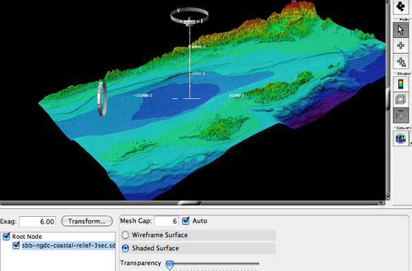
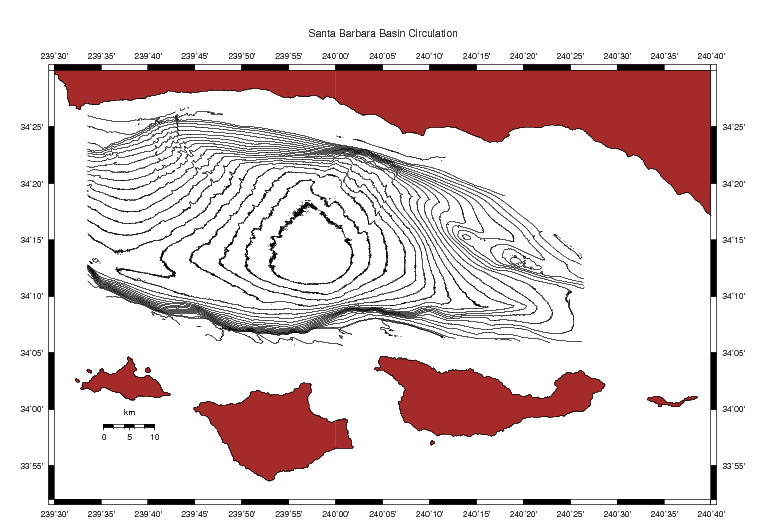
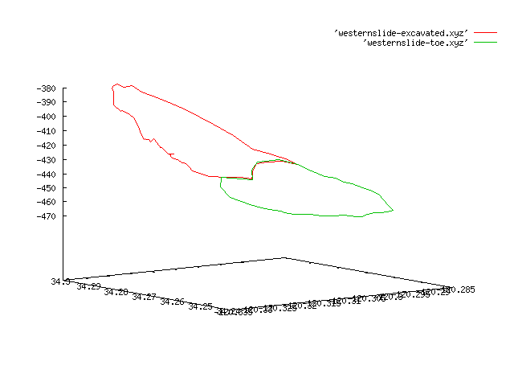
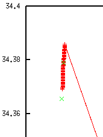
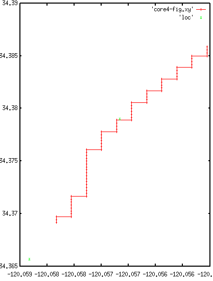

<!DOCTYPE html PUBLIC "-//W3C//DTD XHTML 1.0 Transitional//EN" "http://www.w3.org/TR/xhtml1/DTD/xhtml1-transitional.dtd">
<html xmlns="http://www.w3.org/1999/xhtml">
<head>
<meta name="generator" content="NanoBlogger 3.1" />
<meta name="robots" content="all" />
<meta name="revisit-after" content="31 days" />
<meta http-equiv="Content-Type" content="text/html; charset=iso-8859-1" />

<title>Kurt's Weblog: July 2005 Archives</title>

<link rel="stylesheet" href="../styles/nb_default.css" type="text/css" />
<link rel="shortcut icon" href="../images/favicon.ico" />
<link rel="alternate" type="application/rss+xml" title="RSS 2.0" href="../rss.xml" />
<link rel="alternate" type="application/rss+xml" title="RSS 1.0" href="../index.xml" />
<link rel="alternate" type="application/atom+xml" title="Atom 0.3" href="../atom.xml" />

</head>

<body>

<div id="banner">
<h1><a href="../index.html" accesskey="1">Kurt's Weblog</a></h1>
<span class="description">electronic work log</span>
</div>

<div id="content">

<div class="blog">
<div id="menu">
	<a href="../index.html">Main</a>
</div>
</div>

<div class="blog">
<div class="item">
<a id="e2005-07-31T07_44_54.txt" name="e2005-07-31T07_44_54.txt"></a>
<h2 class="date">07.31.2005 07:44</h2>
<div class="blogbody">
<h3 class="title">NGDC Coastal Relief Model</h3>
<div class="item-description">
I just made a new fledermaus object: <a
href="http://schwehr.org/Gaviota/bpsio-Aug04/Fledermaus/sbb-ngdc-coastal-relief-3sec.sd.bz2">sbb-ngdc-coastal-relief-3sec.sd.bz2</a>
[1.6 MB sd file]
<br /><br />
I started at this web page: <a href="http://www.ngdc.noaa.gov/mgg/coastal/grddas06/grddas06.htm">NGDC Coastal Relief Model Vol. 06 Shaded Relief Images -
Southern California Coast Grids</a>.  From there I selected Design-a-Grid.
<br /><br />
I made a 3 second ascii data file for my area using the "US Coastal
Relief Model Grids</a>.  I then used IVS's DMagic program that comes
with Fledermaus.  In DMagic, I did an Import Surface and used the
default shading and color maps.  Using ascii is problable not the
best, but it works.  I just had to deal with a 30 MB data file to
download.
<br /><br />
This is what I got:
<br /><br />
<a href=="../attachments/2005-07/sbb-coastal-3sec.png"></a>
<br /><br />
Now to blend this in with my figure of the SBB currents.
</div>
</div>

<div class="posted">
<br />Posted by <span class="item-creator">Kurt</span>
| <a class="link" href="2005-07.html#e2005-07-31T07_44_54.txt">Permalink</a>

<!-- <br /><a href="archives/2005-08-01T06_29_23.html#comments">Comments</a> -->
</div>
</div>
<div class="item">
<a id="e2005-07-31T05_41_25.txt" name="e2005-07-31T05_41_25.txt"></a>
<h2 class="date">07.31.2005 05:41</h2>
<div class="blogbody">
<h3 class="title">Underwater</h3>
<div class="item-description">
<a href="http://www.sname.org/">The Society of Naval Architects and Marine Engineers</a>
<br /><br />
An amusing looking book: <a href="http://www.rpelectronics.com/Default.asp?Main=/English/OnlineCat.asp?Menu=/English/Content/Categories/CatM_35.asp%26Detail=/English/Content/Items/0-9681610-0-6.asp">Build Your Own Underwater Robot (and Other Wet Projects)</a>
<br /><br />
Another interesting sounding book: Introduction to Mechatronics and
Measurement Systems, 1999.  By Histand and Alciatore.
</div>
</div>

<div class="posted">
<br />Posted by <span class="item-creator">Kurt</span>
| <a class="link" href="2005-07.html#e2005-07-31T05_41_25.txt">Permalink</a>

<!-- <br /><a href="archives/2005-07-31T07_44_54.html#comments">Comments</a> -->
</div>
</div>
<div class="item">
<a id="e2005-07-30T18_55_45.txt" name="e2005-07-30T18_55_45.txt"></a>
<h2 class="date">07.30.2005 18:55</h2>
<div class="blogbody">
<h3 class="title">Python 3D</h3>
<div class="item-description">
La Quinta at exit 294 south of Salt Lake has free wireless.  Yeah!  We
are pretty wiped out from the driving.  This hotel got 2 stars on the
web, but is nicer than some 3 star hotels I have stayed at.  We both
passed out when we got here.
<br /><br />
<a href="https://gna.org/projects/soya/">Soya 3D</a><pre>
Soya 3D is a high level 3D engine for Python. It relies on OpenGL, SDL
and Cal3D. It is designed with games in mind, focusing both on
performance and ease-of-use. Soya 3D is available under the GPL and
currently runs on GNU/Linux, though ports to other OS are planned (Mac
OS X, windows,...) since it uses only portable libraries.</pre> 
<br /><br />
<a href="http://www.mavromatic.com/archives/000457">Telemmersion
System - 360&deg; Spherical Video Capture (VR)</a>.  I am sure this
runs afoul of the annoying <a href="http://ipix.com/">iPix</a> patents
and trademarks that makes it illegal to talk about "panospheric"
images in papers.
<br /><br />
I could have used this last year for some of my research: <a
href="http://manugarg.blogspot.com/2005/06/sniffing-in-switched-network.html">sniffing
in a switched network</a>.
<br /><br />
<a href="http://www.hypexr.org/bash_tutorial.shtml">Bash tutorial</a>
<br /><br />
Comprehensive TCP/IP and UDP/IP <a
href="http://www.iana.org/assignments/port-numbers">port numbers</a>
for when your /etc/services is not up to the task.
<br /><br />
<a href="http://acg.media.mit.edu/people/fry/zipdecode/">zipcode
map</a> - start typing the number and it will begin zooming in.  Cool!
<br /><br />
<a
href="http://www.sciencedaily.com/releases/2005/07/050729062949.htm">Brown
Grad Student's Seismic Study Shakes Up Plate Tectonics</a>.  I would
have to read the Nature paper before I can comment.
<pre>
  PROVIDENCE, R.I. - Earth's cool, rigid upper layer, known as the
  lithosphere, rides on top of its warmer, more pliable neighbor, the
  asthenosphere, as a series of massive plates. Plates continuously
  shift and break, triggering earthquakes, sparking volcanic
  eruptions, sculpting mountains and carving trenches under the sea. 
<br /><br />
  But what, exactly, divides the lithosphere and the asthenosphere? In
  the latest issue of Nature, a trio of geophysicists from Brown
  University and the Massachusetts Institute of Technology publish
  research that sheds new light on the nature of the boundary between
  these rocky regions. 
<br /><br />
  Lead author Catherine Rychert, a 26-year-old graduate student in
  Brown's Department of Geological Sciences, found a sharp dividing
  line between the lithosphere and the asthenosphere, according to
  data culled from seismic sensors sprinkled across the northeastern
  United States and southeastern Canada. Rychert and colleagues
  discovered that sound waves recorded by the sensors slow
  considerably about 90 to 110 kilometers below ground - a sign that
  the rock is getting weaker and that the lithosphere is giving way to
  the asthenosphere. Within in a distance of a mere 11 kilometers -
  roughly 7 miles or less - the transition is complete.
...
</pre>
</div>
</div>

<div class="posted">
<br />Posted by <span class="item-creator">Kurt</span>
| <a class="link" href="2005-07.html#e2005-07-30T18_55_45.txt">Permalink</a>

<!-- <br /><a href="archives/2005-07-31T05_41_25.html#comments">Comments</a> -->
</div>
</div>
<div class="item">
<a id="e2005-07-29T14_51_29.txt" name="e2005-07-29T14_51_29.txt"></a>
<h2 class="date">07.29.2005 14:51</h2>
<div class="blogbody">
<h3 class="title">Dueling google and microsoft maps</h3>
<div class="item-description">
<br /><br />
I wish I may, I wish I might... have the ability to turn off animated
gifs in Sarfari.  All these add images really chew up battery for no
good reason!
<br /><br />
<a href="http://www.jonasson.org/maps/">Google and Microsoft maps</a>
side by side.
<br /><br />
<a
href="http://scisites.msfc.nasa.gov/realtime/jtrack/3d/JTrack3D.html">JTrack3D</a>
from NASA.  Shows many satelites around the earth.  I could only
figure out how to zoom out using the standard Mac laptop track pad.  But then again, I did not read the directions <br />
<a href=:http://www.krages.com/phoright.htm">he Photographer's Right -
A Downloadable Flyer: Your Rights When You Are Stopped or Confronted
for Photography</a>
<br /><br />
<a href="http://www.ipodhacks.com/article.php?sid=1469">ipod battery
v1.0</a> - Show a different battery display on the ipod.  I have not
tried this.
<br /><br />
<a href="http://www.esa.int/SPECIALS/Mars_Express/SEMGKA808BE_0.html">Ice Lake on Mars</a>
</div>
</div>

<div class="posted">
<br />Posted by <span class="item-creator">Kurt</span>
| <a class="link" href="2005-07.html#e2005-07-29T14_51_29.txt">Permalink</a>

<!-- <br /><a href="archives/2005-07-30T18_55_45.html#comments">Comments</a> -->
</div>
</div>
<div class="item">
<a id="e2005-07-28T10_33_26.txt" name="e2005-07-28T10_33_26.txt"></a>
<h2 class="date">07.28.2005 10:33</h2>
<div class="blogbody">
<h3 class="title">gmt contour map</h3>
<div class="item-description">
I just created a very basic contour basemap for me to add currents to.
I uses mbm_grdplot to get the basic file and then edited from there.
I switched grdimage to be grdcontour along with other changes.  Why in
the world can illustrator not properly read the output of gnuplot and
gmt that then goes through ps2pdf?  Other programs can do this.  And
illustrator is up to correctly reading gmt ps files without mangling
the line strokes. Really drives me crazy! Here are the final
results:<br>
  
<pre>
<font color="0000ff"><strong>#! /bin/csh -f</strong></font>
<font color="#444444"># 
# This shellscript created by following command line:
# mbm_grdplot -IsantabarbC_bath.grd
#
# Then hacked by Kurt Schwehr
</font>
set PS_FILE         = santabarbC_bath.grd.ps
set CPT_FILE        = santabarbC_bath.grd.cpt
set MAP_PROJECTION  = m
set MAP_SCALE       = 7.5
set MAP_REGION      = -120:30/-119:20/33:52/34.5
set X_OFFSET        = 1
set Y_OFFSET        = 2.2175
<font color="#444444">#</font>
<font color="#444444"># Save existing GMT defaults
echo Saving GMT defaults...
gmtdefaults -L &gt; gmtdefaults$$</font>
<font color="#444444">#</font>
<font color="#444444"># Set new GMT defaults
echo Setting new GMT defaults...</font>
gmtset MEASURE_UNIT inch
gmtset PAPER_MEDIA archA+
gmtset ANOT_FONT Helvetica
gmtset LABEL_FONT Helvetica
gmtset HEADER_FONT Helvetica
gmtset ANOT_FONT_SIZE 8
gmtset LABEL_FONT_SIZE 8
gmtset HEADER_FONT_SIZE 10
gmtset FRAME_WIDTH 0.075
gmtset TICK_LENGTH 0.075
gmtset PAGE_ORIENTATION LANDSCAPE
gmtset COLOR_BACKGROUND 0/0/0
gmtset COLOR_FOREGROUND 255/255/255
gmtset COLOR_NAN 255/255/255
gmtset DEGREE_FORMAT 3
<font color="#444444">#</font>
<font color="#444444"># Make color pallette table file
echo Making color pallette table file...</font>
echo   -625  37  57 175 -562.5  40 127 251 &gt; <font color="#2040a0">$CPT_FILE</font>
echo -562.5  40 127 251   -500  50 190 255 &gt;&gt; <font color="#2040a0">$CPT_FILE</font>
echo   -500  50 190 255 -437.5 106 235 255 &gt;&gt; <font color="#2040a0">$CPT_FILE</font>
echo -437.5 106 235 255   -375 138 236 174 &gt;&gt; <font color="#2040a0">$CPT_FILE</font>
echo   -375 138 236 174 -312.5 205 255 162 &gt;&gt; <font color="#2040a0">$CPT_FILE</font>
echo -312.5 205 255 162   -250 240 236 121 &gt;&gt; <font color="#2040a0">$CPT_FILE</font>
echo   -250 240 236 121 -187.5 255 189  87 &gt;&gt; <font color="#2040a0">$CPT_FILE</font>
echo -187.5 255 189  87   -125 255 161  68 &gt;&gt; <font color="#2040a0">$CPT_FILE</font>
echo   -125 255 161  68  -62.5 255 186 133 &gt;&gt; <font color="#2040a0">$CPT_FILE</font>
echo  -62.5 255 186 133      0 255 255 255 &gt;&gt; <font color="#2040a0">$CPT_FILE</font>
<font color="#444444">#</font>
<font color="#444444"># Define data files to be plotted:
set DATA_FILE        = santabarbC_bath.grd</font>
set INTENSITY_FILE   = 
<br /><br />
<font color="#444444">#set CONTOURS = -C200  # for quick look</font>
set CONTOURS = -C25
<br /><br />
echo Running grdcontour...
grdcontour <font color="#2040a0">$DATA_FILE</font> <font color="#2040a0">$CONTOURS</font> -J<font color="#2040a0">$MAP_PROJECTION</font><font color="#2040a0">$MAP_SCALE</font> \
	-R<font color="#2040a0">$MAP_REGION</font>  \
	-X<font color="#2040a0">$X_OFFSET</font> -Y<font color="#2040a0">$Y_OFFSET</font> -K -V  &gt;! <font color="#2040a0">$PS_FILE</font>
<br /><br />
<font color="#444444"># 188 143 143             rosy brown
# 188 143 143             RosyBrown
# 139  69  19             saddle brown</font>
<font color="#444444"># 139  69  19             SaddleBrown</font>
<font color="#444444"># 244 164  96             sandy brown</font>
<font color="#444444"># 244 164  96             SandyBrown
set brown = 165/42/42             </font>
<font color="#444444"># 255 193 193             RosyBrown1
# 238 180 180             RosyBrown2</font>
<font color="#444444"># 205 155 155             RosyBrown3
# 139 105 105             RosyBrown4</font>
<font color="#444444"># 255  64  64             brown1
# 238  59  59             brown2</font>
<font color="#444444"># 205  51  51             brown3
# 139  35  35             brown4</font>
<br /><br />
<br /><br />
<font color="#444444"># Where are all the rivers at?  -Ia should be ALL</font>
pscoast -Ia30 -Df -W -G<font color="#2040a0">$brown</font> -C0/0/255 -J<font color="#2040a0">$MAP_PROJECTION</font><font color="#2040a0">$MAP_SCALE</font> \
	-R<font color="#2040a0">$MAP_REGION</font> -O -K -V &gt;&gt; <font color="#2040a0">$PS_FILE</font>
<br /><br />
<br /><br />
echo Running psbasemap...
<br /><br />
set TITLE = <font color="#008000">&quot;Santa Barbara Basin Circulation&quot;</font>
<br /><br />
psbasemap -J<font color="#2040a0">$MAP_PROJECTION</font><font color="#2040a0">$MAP_SCALE</font> \
         -Lfx1i/1i/0/10 \
	-R<font color="#2040a0">$MAP_REGION</font> \
	-B5m/5m:.<font color="#008000">&quot;${TITLE}&quot;</font>: \
	-O -V &gt;&gt; <font color="#2040a0">$PS_FILE</font>
<br /><br />
echo Resetting GMT fonts...
/bin/mv gmtdefaults$$ .gmtdefaults
<br /><br />
gv santabarbC_bath.grd.ps &amp;
</pre>
</div>
</div>

<div class="posted">
<br />Posted by <span class="item-creator">Kurt</span>
| <a class="link" href="2005-07.html#e2005-07-28T10_33_26.txt">Permalink</a>

<!-- <br /><a href="archives/2005-07-29T14_51_29.html#comments">Comments</a> -->
</div>
</div>
<div class="item">
<a id="e2005-07-28T09_16_17.txt" name="e2005-07-28T09_16_17.txt"></a>
<h2 class="date">07.28.2005 09:16</h2>
<div class="blogbody">
<h3 class="title">Emacs TeX mode</h3>
<div class="item-description">
I just tried TeX -&gt; Validate Buffer in the emacs TeX mode while
editing my current paper.  Hah.  And that is not a good <em>hah</em>.
Validate is pretty weak.  Here is the output I get:
<pre>
Mismatches:
 12: \begin{document}
 29: \begin{abstract}
 48: \end{abstract}
 50: \begin{article}
277: %@article{
611: \end{article}   
729: \caption{ Core 1 is located in the toe of the Gaviota Slide
747: \caption{ Core 2 is located in the toe of the Gaviota Slide (See
760: \caption{ Core 4 is located in the above the crack between the Gaviota
774: %% \caption{ Core 6 is located in top of the center lobe of the Goleta
784: \end{document}
</pre>
Oh look, there are indeed matching begin and ends for the document and
abstract tags.  This did not find one valid complaint and it is not
honoring comments.  My other major touble is that highlighting freaks
out after CVS checkin.  I have to do a M-x revert-buffer to get
highlighting to work again.
</div>
</div>

<div class="posted">
<br />Posted by <span class="item-creator">Kurt</span>
| <a class="link" href="2005-07.html#e2005-07-28T09_16_17.txt">Permalink</a>

<!-- <br /><a href="archives/2005-07-28T10_33_26.html#comments">Comments</a> -->
</div>
</div>
<div class="item">
<a id="e2005-07-28T08_35_13.txt" name="e2005-07-28T08_35_13.txt"></a>
<h2 class="date">07.28.2005 08:35</h2>
<div class="blogbody">
<h3 class="title">My latest slashdot article - Free Audio Content for Long Drives?</h3>
<div class="item-description">
<br /><br />
I got an article accepted on slashdot this week.  Here it is and some
of the feedback.  I am not going to bother responding to the folks
that are upset that I did not specify <em>which country</em> we are
driving across.  Does it matter?  Is my mp3 file going to care whether
this is Australia, Canada, or the US?  I was NOT looking for
podcasts.  I can only take so many of those.
<pre>
<a href="http://ask.slashdot.org/article.pl?sid=05/07/26/1857254">Free Audio Content for Long Drives?</a>
<br /><br />
  We are going to be driving across the country at the end of the week
  to a new job and wondered if there are good sources for free
  books/stories on tape that we could put on our iPod to make the long
  hours of freeway driving go much faster. What are your favorite
  stories for the road and where are good places to pickup content?
  Old radio shows, mysteries, etc are all good!" 
</pre>
<br /><br />
WARNING: I have yet to preview any of this audio.  Could be complete
junk.  And no, I don't have time to fiddle with converting ram real
audio files to mp3.
<ul>
<li><a
href="http://www.theafternow.com/listen.php">http://www.theafternow.com/listen.php</a>
- The Sean Kennedy Chronicles
<li><a href="http://podiobooks.com/">podiobooks.com</a> - Looks like SciFi
and Fantasy.  
<li>An older slashdot story: <a
href="http://ask.slashdot.org/article.pl?sid=05/03/20/2130211">Sources
of Intelligent Audio for Commute?</a>
<li><a
href="http://www.scottsigler.net/earthcore/">http://www.scottsigler.net/earthcore/</a>
- Most of the novel is apparently on line from the author.
<li><a
href="http://www.radiolovers.com/">http://www.radiolovers.com/</a>
looks actually promissing.
<li><a
href="http://www.archive.org/audio/collection.php?collection=opensource_audio">http://www.archive.org/audio/collection.php?collection=opensource_audio</a>
<li><a
href="http://www.pinkgeekaudio.net/weblog3/">http://www.pinkgeekaudio.net/weblog3/</a>Sherlock
Holmes
<li><a
href="http://escape.extraneous.org/">http://escape.extraneous.org/</a>
- Escape pod.  What is this?
<li><a href="http://www.gutenberg.org/browse/categories/1">Project
gutenberg audio</a> - looks promising
<li><a
href="http://www.spokenalex.org/">http://www.spokenalex.org/</a> ???
</ul>
That's it for now.  How about some more bookmarks?  Ok.
<br /><br />
<a
href="http://www.criminalcheck.com/">http://www.criminalcheck.com/</a>
- find out how good or bad your zip code is.  Can be a little bit
unnerving!
<br /><br />
<a
href="http://digg.com/programming/C_pointers%2C_the_easy_way_to_learn_them_">C++
pointer tutorial</a> - Jeremy, maybe this will help?
<br /><br />
<a href="http://w3.misterhouse.net:81/">MisterHouse -- It Knows
Kung-Fu</a> - X10 type stuff
<br /><br />
<a href="http://www.marshome.org/">http://www.marshome.org/</a>
<pre>
  Building upon concepts and designs from the past several decades,
  the Mars Homestead Project seeks to develop a unified plan for
  building the first habitat on Mars by exploiting local
  materials. The ultimate goal of the project is to build a growing,
  permanent settlement beyond the Earth, thus allowing civilization to
  spread beyond the limits of our small planet. 
<br /><br />
  To Arrive, Survive & Thrive!TM
</pre>
Trade mark??? Are you kidding me?  This looks like the Stanford
International Mars Mission project but with CAD rendering systems and
lots of pretty ray traced pictures.
</div>
</div>

<div class="posted">
<br />Posted by <span class="item-creator">Kurt</span>
| <a class="link" href="2005-07.html#e2005-07-28T08_35_13.txt">Permalink</a>

<!-- <br /><a href="archives/2005-07-28T09_16_17.html#comments">Comments</a> -->
</div>
</div>
<div class="item">
<a id="e2005-07-28T08_33_55.txt" name="e2005-07-28T08_33_55.txt"></a>
<h2 class="date">07.28.2005 08:33</h2>
<div class="blogbody">
<h3 class="title">Saturn of the Valley and bibtex</h3>
<div class="item-description">
I am in the "Saturn of the Valley" this morning getting an oil change
and some other stuff done before going across the country.  Not all
Saturns are created equally.  Yes, this one has donuts (not all do),
but no donut holes <br />
I made a trivial change to my x/doc/BPSIO-04/Makefile for sucking in
Endnote bibliographic info into Bibtex.  My new rule looks like this:
<pre>
# Assumes santabarbara.txt was export from EndNote onto the Desktop
bib:
	-mv ${NAME}.bib ${NAME}.bib.bak
	/sw/bin/tr '\r' '\n' < ~/Desktop/${NAME}.txt > ${NAME}.bib
	diff ${NAME}.bib.bak ${NAME}.bib
</pre>
The rule now makes a backup of the bibtex file, then translates the
new Mac format bibtex from the desktop to create a new
santabarbara.bib.  Then it gives me some feedback as to what changed.
</div>
</div>

<div class="posted">
<br />Posted by <span class="item-creator">Kurt</span>
| <a class="link" href="2005-07.html#e2005-07-28T08_33_55.txt">Permalink</a>

<!-- <br /><a href="archives/2005-07-28T08_35_13.html#comments">Comments</a> -->
</div>
</div>
<div class="item">
<a id="e2005-07-27T20_04_26.txt" name="e2005-07-27T20_04_26.txt"></a>
<h2 class="date">07.27.2005 20:04</h2>
<div class="blogbody">
<h3 class="title">Google Map for the Space Shuttle</h3>
<div class="item-description">
<a href="http://gmaps.tommangan.us/spacecraft_tracking.html">Spacecraft Tracking</a>
<br /><br />
<a href="http://www.macmaps.com/Macosxspeed.html">Mac OSX speedups</a>
</div>
</div>

<div class="posted">
<br />Posted by <span class="item-creator">Kurt</span>
| <a class="link" href="2005-07.html#e2005-07-27T20_04_26.txt">Permalink</a>

<!-- <br /><a href="archives/2005-07-28T08_33_55.html#comments">Comments</a> -->
</div>
</div>
<div class="item">
<a id="e2005-07-27T16_57_15.txt" name="e2005-07-27T16_57_15.txt"></a>
<h2 class="date">07.27.2005 16:57</h2>
<div class="blogbody">
<h3 class="title">pydoc complaints</h3>
<div class="item-description">
It is great that pydoc is built into the python distributions, but it
is missing some features that I think would be really important.
<br /><br />
First, I would really like it to have an option to complain about
undocumented functions and arguments.  I like that feature in
doxygen.  Having a friendly reminder to keep documenting is a good
thing!
<br /><br />
Secondly, it would be much better to have a standard way to specify
arguments as with doxygen.  There is nothing inside the doc string
that knows about args.  This is really a part of the first gripe.
<br /><br />
Third, when I import unittest and derive a subclass for my tests, I
want a couple of different options.  One would be to turn on and off
the documentation of the test cases.  The other would be to show or
the methods from the parent class.  I don't really want people using
one of my classes to have to wade through the documentation of
failIfEqual, failUnless, etc.
<br /><br />
Fourth, what about an epilog section for less important text.  I
really don't like putting the whole GPL license text at the front.  I
could do a one liner there and include the whole deal at the end.
That would be better!
<br /><br />
Fifth, how do I get the links to other modules to work?
file:///Users/schwehr/projects/xcore/src/segy-py/unittest.html is
<b>not</b> where the unittest.html doc lives!!!
<br /><br />
Finially, it would be nice to have the option to either sort the
methods or not sort the methods.  Why?  It is easier to see the
structure of the code file to not sort the methods.  Then when I
release code, I will rebuild the documentation to be sorted.
<br /><br />
Just so nobody is confused... I think pydoc is a "REALLY GOOD THING"
and I appreciate the python community for putting it in there.
</div>
</div>

<div class="posted">
<br />Posted by <span class="item-creator">Kurt</span>
| <a class="link" href="2005-07.html#e2005-07-27T16_57_15.txt">Permalink</a>

<!-- <br /><a href="archives/2005-07-27T20_04_26.html#comments">Comments</a> -->
</div>
</div>
<div class="item">
<a id="e2005-07-27T16_31_00.txt" name="e2005-07-27T16_31_00.txt"></a>
<h2 class="date">07.27.2005 16:31</h2>
<div class="blogbody">
<h3 class="title">Santa Barbara oil and gas platforms</h3>
<div class="item-description">
I can't remember what A, B, and C are...
<pre>
  -120.646389 34.455083 HERMOSA
  -120.680817 34.469136 HARVEST
  -120.729428 34.610419 IRENE
  -120.702289 34.495014 HIDALGO
  -120.279183 34.350392 HERITAGE
  -120.120531 34.390731 HONDO
  -120.167525 34.376675 HARMONY
  -119.276258 34.117497 GINA
  -119.400217 34.125081 GAIL
  -119.418564 34.182342 GILDA
  -119.467828 34.179572 GRACE
  -119.588094 34.286617 HABITAT
  -119.541486 34.337675 HOGAN
  -119.552117 34.334992 HOUCHIN
  -119.603247 34.331344 HILLHOUSE
  -119.560397 34.333256 HENRY
  -119.612469 34.331886 A
  -119.621536 34.332342 B
  -119.630767 34.332925 C
  -118.116494 33.563781 EUREKA
  -118.128222 33.582367 ELLEN
  -118.140686 33.595786 EDITH
</pre>
</div>
</div>

<div class="posted">
<br />Posted by <span class="item-creator">Kurt</span>
| <a class="link" href="2005-07.html#e2005-07-27T16_31_00.txt">Permalink</a>

<!-- <br /><a href="archives/2005-07-27T16_57_15.html#comments">Comments</a> -->
</div>
</div>
<div class="item">
<a id="e2005-07-27T16_21_21.txt" name="e2005-07-27T16_21_21.txt"></a>
<h2 class="date">07.27.2005 16:21</h2>
<div class="blogbody">
<h3 class="title">WARNING to Mac Laptop users</h3>
<div class="item-description">
WARNING^2 - This material is unconfirmed and is my recollection of
what the Genius Bar guy said.
<br /><br />
I just paid a visit to the Apple Store in the Grove.  I had a question
about my battery freaking out.  Turns out that there is a big no-no
with Mac laptops:
<pre>
  ALWAYS plug in your power adapter to the wall first.  Then plug the
  adapter into the laptop afterwards.
</pre>
The guy said that it is <b>extremely hard on the power supply module
and the battery</b> to plug and unplug the wall socket with the
connector still in the laptop.  He also said, "Didn't you read about
this in the manual?"
<br /><br />
Yikes, so even a power outage is really hard on laptops.  This sucks.
So you really don't want to have a power strip that you turn on and
off instead of plugging and unplugging the power adapter.
<br /><br />
He did a power management unit reset with a key combo that I don't
remember.  He first turn off nntp.  He wanted to see the date get
lost.  When it was lost on reset, then he declared the PMU ok.
Strange voodoo.
<br /><br />
As for my laptop getting really hot, his suggestion was to reduce the
CPU power (speed) in System Preferences -&gt; Energy Saver -&gt; Options -&gt;
Processor performace.  Set this to "Reduced."
<br /><br />
Hopefully that will help some of my crashing issues.  But I just had
another emacs weirdness.  This one jumped suddenly to the "PROBLEMS"
buffer.  Never seen that one before.
<br /><br />
Finally, thanks to <a href="http://skipheller.com/">Skip Heller</a>
who was ahead of me in line at the Apple store for pointed out <a
href="http://personalpages.tds.net/~brian_hill/macjanitor.html">MacJanitor</a>
for cleaning up a Mac disk.  And double thanks for the CD.
</div>
</div>

<div class="posted">
<br />Posted by <span class="item-creator">Kurt</span>
| <a class="link" href="2005-07.html#e2005-07-27T16_21_21.txt">Permalink</a>

<!-- <br /><a href="archives/2005-07-27T16_31_00.html#comments">Comments</a> -->
</div>
</div>
<div class="item">
<a id="e2005-07-27T09_03_54.txt" name="e2005-07-27T09_03_54.txt"></a>
<h2 class="date">07.27.2005 09:03</h2>
<div class="blogbody">
<h3 class="title">Konfabulator bought by Yahoo</h3>
<div class="item-description">
Yahoo has bought <a href="http://widgets.yahoo.com/">Konfabulator</a>
which is now free.  Woo hoo!  If you don't know this program, you need
to give it a try.
<br /><br />
<a href="http://www.nasa.gov/mission_pages/MRO/main/index.html">Mars Reconnaissance Orbiter</a>
<br /><br />
Looks like there is a new version of <a href="http://www.synowiec.org/portal/modules/mydownloads/viewcat.php?cid=14">TkSU floating around</a>.  But it is not at the <a href="http://www.henrythorson.com/software.htm">HenryThorson</a> site
<br /><br />
There is an interesting CNN story out there: <a href="http://www.cnn.com/2005/TECH/space/07/22/meteor.mars.reut/index.html">Meteor study pours cold water on warm Mars theory</a>... yet more from ALH84001.
<pre>
  WASHINGTON (Reuters) -- A study of meteorites chipped off the
  surface of Mars suggests the planet has been frozen for 4 billion
  years and probably never had the warm wet conditions that could have
  given rise to life, two researchers said Thursday. 
<br /><br />
  Their study of two meteorites that fell to Earth suggests they were
  never in warm conditions. The report, published in the journal
  Science, contradicts theories the now-frozen planet may once have
  been warm enough for life to have arisen. 
<br /><br />
  "First, we evaluated what the meteorites could have experienced
  during ejection from Mars, 11 to 15 million years ago, in order to
  set an upper limit on the temperatures in a worst-case scenario for
  shock-heating," said Benjamin Weiss, an assistant professor at the
  Massachusetts Institute of Technology. He did the work while a
  graduate student at the California Institute of Technology. 
<br /><br />
  They concluded the two meteorites were unlikely to have been above
  the boiling point of water during their ejection from the Martian
  surface 11 million years ago. 
<br /><br />
  Then Weiss and fellow student David Shuster measured the amount of
  argon remaining in the samples. 
<br /><br />
  Argon, a gas, is known to leak out of rocks at a rate that depends
  on temperature. 
<br /><br />
  The cooler the rock has been, the more argon will have been
  retained.
...
</pre>
Tom's Hardware has an article entitled <a
  href="http://www.tomshardware.com/game/20050726/index.html">Five Key
  Gaming Concepts</a>  Sounded like there would be some interesting
  ideas until I saw the list:
<ol>
<li>Voice Recognition
<li>Physical Involvement
<li>Real Life Elements
<li>Games On Your Phone
<li>Putting Yourself Into the Game
</ol>
I am not sure what I expected from that title.
<br /><br />
<a
href="http://www.xbox.com/en-US/news/2005/0517-MtDewXbox360Giveaway.htm">xbox
giveaway</a>
<br /><br />
<a href="http://www.sitepoint.com/article/firefox-secrets">You Don't
Know Jack About Firefox!</a>
<br /><br />
<a
href="http://www.macosxhints.com/article.php?story=20050719002836371&lsrc=osxh">Create
a 'parent directory' Toolbar button</a>
<br /><br />
<a href="http://www.gizmag.com/go/4330/">Futuristic design for new Antarctic base</a>
</div>
</div>

<div class="posted">
<br />Posted by <span class="item-creator">Kurt</span>
| <a class="link" href="2005-07.html#e2005-07-27T09_03_54.txt">Permalink</a>

<!-- <br /><a href="archives/2005-07-27T16_21_21.html#comments">Comments</a> -->
</div>
</div>
<div class="item">
<a id="e2005-07-25T10_03_51.txt" name="e2005-07-25T10_03_51.txt"></a>
<h2 class="date">07.25.2005 10:03</h2>
<div class="blogbody">
<h3 class="title">Crashed my iMac</h3>
<div class="item-description">
Just managed to hang my iMac 700MHz G4 gumdrop.  Bummer 
</div>

<div class="posted">
<br />Posted by <span class="item-creator">Kurt</span>
| <a class="link" href="2005-07.html#e2005-07-25T10_03_51.txt">Permalink</a>

<!-- <br /><a href="archives/2005-07-27T09_03_54.html#comments">Comments</a> -->
</div>
</div>
<div class="item">
<a id="e2005-07-24T09_34_55.txt" name="e2005-07-24T09_34_55.txt"></a>
<h2 class="date">07.24.2005 09:34</h2>
<div class="blogbody">
<h3 class="title">Underwater noise from Dec 26 quake</h3>
<div class="item-description">
<a href="http://www.ldeo.columbia.edu/news/2005/07_20_05.htm">The
Sound of a Distant Rumble: Researchers Track Underwater Noise
Generated by December 26 Earthquake</a>
<br /><br />
<a href="http://www.agu.org/pubs/helpdesk/index.html">AGU Helpdesk</a>
has the AGU's LaTeX info.
<br /><br />
<a href="http://www.ctan.org/tex-archive/macros/latex/contrib/aguplus/README.aguplus">ctan agu++</a>
<br /><br />
<a
href="http://virtualearth.msn.com/">http://virtualearth.msn.com/</a> -
Microsofts challenge to google maps.  I have to say that right now it
sucks.  I tried to use the satellite view for Portsmouth, NH and it
sent me to Atlanta, GA.  Yikes.
<br /><br />
<a href="http://train.apple.com/certification/macosx">Mac OSX
certifications from Apple</a> - sample test questions included
<br /><br />
<a
href="http://www.engin.umd.umich.edu/CIS/course.des/cis400/">Lauguage
guide</a> for many many programming languages.
</div>
</div>

<div class="posted">
<br />Posted by <span class="item-creator">Kurt</span>
| <a class="link" href="2005-07.html#e2005-07-24T09_34_55.txt">Permalink</a>

<!-- <br /><a href="archives/2005-07-25T10_03_51.html#comments">Comments</a> -->
</div>
</div>
<div class="item">
<a id="e2005-07-23T09_13_30.txt" name="e2005-07-23T09_13_30.txt"></a>
<h2 class="date">07.23.2005 09:13</h2>
<div class="blogbody">
<h3 class="title">python type checking</h3>
<div class="item-description">
<a href="http://www.python.org/pypi/typecheck/0.1.0">typecheck</a>
provides a decorator for python functions that does type checking.
Nice.<pre>
@typecheck(int, str, str)
def my_func(a, b, c):
        pass
<br /><br />
my_func('5', 'x', 'y')</pre>
<br /><br />
Just had a kernel panic on my Mac OSX laptop.  I think this is about
the 4th or 5th time since I bought the laptop last October.  I wish
there was a way to know what it was that is causing these.  I realize
that with what I am doing, Windows would be crashing all the time, but
it still sucks.
<br /><br />
<a href="http://groups-beta.google.com/group/comp.text.tex/browse_thread/thread/7686bed24f189a6e">LaTeX news group thread on the AGU style</a>  This guy is using agu04.bst
</div>
</div>

<div class="posted">
<br />Posted by <span class="item-creator">Kurt</span>
| <a class="link" href="2005-07.html#e2005-07-23T09_13_30.txt">Permalink</a>

<!-- <br /><a href="archives/2005-07-24T09_34_55.html#comments">Comments</a> -->
</div>
</div>
<div class="item">
<a id="e2005-07-22T16_25_00.txt" name="e2005-07-22T16_25_00.txt"></a>
<h2 class="date">07.22.2005 16:25</h2>
<div class="blogbody">
<h3 class="title">Game controllers for PCs</h3>
<div class="item-description">
I would really like to hook up the PS/2 shock interface for some of my
3D research.  Could be a really awesome flythrough controller.  <a
href="http://www.sealiecomputing.com/retrozone/index.html">Retrozone
controllers</a> uses a USB adaptor.  Looks cool!
<br /><br />
<a href="http://rockymountainnews.com/drmn/state/article/0,1299,DRMN_21_3944768,00.html">NASA Scrubbs Mars Telecommunications Orbiter</a>
</div>
</div>

<div class="posted">
<br />Posted by <span class="item-creator">Kurt</span>
| <a class="link" href="2005-07.html#e2005-07-22T16_25_00.txt">Permalink</a>

<!-- <br /><a href="archives/2005-07-23T09_13_30.html#comments">Comments</a> -->
</div>
</div>
<div class="item">
<a id="e2005-07-22T14_25_48.txt" name="e2005-07-22T14_25_48.txt"></a>
<h2 class="date">07.22.2005 14:25</h2>
<div class="blogbody">
<h3 class="title">Pilled Higher and Deeper</h3>
<div class="item-description">
<a href="http://www.phdcomics.com/comics/comics.php">http://www.phdcomics.com/comics/comics.php</a>
</div>
</div>

<div class="posted">
<br />Posted by <span class="item-creator">Kurt</span>
| <a class="link" href="2005-07.html#e2005-07-22T14_25_48.txt">Permalink</a>

<!-- <br /><a href="archives/2005-07-22T16_25_00.html#comments">Comments</a> -->
</div>
</div>
<div class="item">
<a id="e2005-07-22T07_58_24.txt" name="e2005-07-22T07_58_24.txt"></a>
<h2 class="date">07.22.2005 07:58</h2>
<div class="blogbody">
<h3 class="title">radar images</h3>
<div class="item-description">
<a href="http://freshmeat.net/projects/pyradar/?branch_id=59420&release_id=202148">pyRadar</a>:
<pre>pyRadar is retrieves and displays radar images from NOAA's NEXRAD
radar stations, which are located around the United States and its
territories. These images are released into the public domain on
behalf of the American public.</pre>
<a href="http://www.arctic-mars.org/">The Haughton Mars Project</a>
has updates on line.  
<br /><br />
<a
href="http://aspn.activestate.com/ASPN/Cookbook/Python/Recipe/437932">pyline</a>
<br /><br />
<a href="http://www.nexuiz.com/">Windows open source 1st person
shooter game</a> ... wish their was a mac version so I could try it.
</div>
</div>

<div class="posted">
<br />Posted by <span class="item-creator">Kurt</span>
| <a class="link" href="2005-07.html#e2005-07-22T07_58_24.txt">Permalink</a>

<!-- <br /><a href="archives/2005-07-22T14_25_48.html#comments">Comments</a> -->
</div>
</div>
<div class="item">
<a id="e2005-07-21T15_25_13.txt" name="e2005-07-21T15_25_13.txt"></a>
<h2 class="date">07.21.2005 15:25</h2>
<div class="blogbody">
<h3 class="title">NewsMac</h3>
<div class="item-description">
<a href="http://www.thinkmac.co.uk/newsmac/">NewsMac</a> looks like
another nice and free News/RSS reader.  I have not tried this one.  It
is supposed to sync with iPods and Palms.
</div>
</div>

<div class="posted">
<br />Posted by <span class="item-creator">Kurt</span>
| <a class="link" href="2005-07.html#e2005-07-21T15_25_13.txt">Permalink</a>

<!-- <br /><a href="archives/2005-07-22T07_58_24.html#comments">Comments</a> -->
</div>
</div>
<div class="item">
<a id="e2005-07-21T12_50_43.txt" name="e2005-07-21T12_50_43.txt"></a>
<h2 class="date">07.21.2005 12:50</h2>
<div class="blogbody">
<h3 class="title">LaTeX landscape figures, centering, and C++ Matrix Template Library</h3>
<div class="item-description">
One more note on centering.  I found this also works too:
<pre>
\begin{table*}[htb]
<b>\centering</b>
\input{coreloctab}
\caption{Locations and lengths of the cores.
\label{tab:coreloctab} 
\end{table*}
</pre>
Jeremy asked about a Matrix package for C++ and then he found this: <a
href="http://www.osl.iu.edu/research/mtl/">The Matrix Template
Library</a>.  No idea about how good or bad it is.  GSL is powerful,
but a bit frustrating to use, so maybe this is much better, but it is
not in fink.
<br /><br />
I figured out one way to do landscape figures.  It looks like there
are many ways to do landscaping, but this is the first one I
successfully used.
<pre>
\documentclass[agupp]{aguplus}
\usepackage{graphicx}
<b>\usepackage{lscape}</b>
<br /><br />
<b>\begin{landscape}</b>
\begin{figure}
\includegraphics{05-watercontent-v2}
\caption{Core 4 is located in the above the crack between the Gaviota
  and Goleta Slides (See Figure~\ref{fig:crack}.)
\label{fig:core4}
\end{figure}
<b>\end{landscape}</b>
</pre>
<br /><br />
BTW, I added trivial additions to to my <a
href="http://schwehr.org/papers/intro-programming.html">Intro to
Scientific Programming</a> on debugging with gdb.  Wow, that document
needs some serious work!  I should really be writing that document in
latex or docbook rather than straight HTML.  It seems silly to
manually do a table of contents.
</div>
</div>

<div class="posted">
<br />Posted by <span class="item-creator">Kurt</span>
| <a class="link" href="2005-07.html#e2005-07-21T12_50_43.txt">Permalink</a>

<!-- <br /><a href="archives/2005-07-21T15_25_13.html#comments">Comments</a> -->
</div>
</div>
<div class="item">
<a id="e2005-07-21T09_53_44.txt" name="e2005-07-21T09_53_44.txt"></a>
<h2 class="date">07.21.2005 09:53</h2>
<div class="blogbody">
<h3 class="title">LaTeX table centering trouble fixed</h3>
<div class="item-description">
I have been having issues with centering a table in my paper.  I
wanted this table to be a floating figure (aka not in 2 column mode
like the rest of the paper). I got that to work with \begin{table*}.
Note the * that makes this a "floating" table.  But when I centered
the table so it looked nicer, the references to the table in the
document disappeared and no error or warning was being issued.  Grrr.
Turns out I was doing the centering wrong.  You can not include the
caption in the centering.  Do <b>NOT</b> do this:
<pre>
\documentclass{article}
%[agupp]{aguplus}
\usepackage{graphicx}
<br /><br />
\begin{document}
<br /><br />
\begin{table*}[htb]
<b>\begin{center}</b>
\begin{tabular}{|c|c|}
aa & b \\
c & d 
\end{tabular}
\caption{Locations and lengths of the cores}
<b>\end{center}</b>
\label{tab:coreloctab} 
\end{table*}
<br /><br />
970 meters of ODP holes 893A,B (see Table~\ref{tab:coreloctab} for
<br /><br />
\end{document}
</pre>
Instead do this, which works just fine:
<pre>
\documentclass{article}
%[agupp]{aguplus}
\usepackage{graphicx}
<br /><br />
\begin{document}
<br /><br />
\begin{table*}[htb]
<b>\begin{center}</b>
\begin{tabular}{|c|c|}
aa & b \\
c & d 
\end{tabular}
<b>\end{center}</b>
\caption{Locations and lengths of the cores}
\label{tab:coreloctab} 
\end{table*}
<br /><br />
970 meters of ODP holes 893A,B (see Table~\ref{tab:coreloctab} for
<br /><br />
\end{document}
</pre>
</div>
</div>

<div class="posted">
<br />Posted by <span class="item-creator">Kurt</span>
| <a class="link" href="2005-07.html#e2005-07-21T09_53_44.txt">Permalink</a>

<!-- <br /><a href="archives/2005-07-21T12_50_43.html#comments">Comments</a> -->
</div>
</div>
<div class="item">
<a id="e2005-07-21T08_54_29.txt" name="e2005-07-21T08_54_29.txt"></a>
<h2 class="date">07.21.2005 08:54</h2>
<div class="blogbody">
<h3 class="title">Scripps expedition to Japan</h3>
<div class="item-description">
There is a new Scripps Expdition web page: <a href="http://scripps.ucsd.edu/japan/">Volcano Expedition to Japan: The Ins and Outs of how Earth Works</a>
<br /><br />
Who else at SIO has a blog of expeditions and research???
</div>
</div>

<div class="posted">
<br />Posted by <span class="item-creator">Kurt</span>
| <a class="link" href="2005-07.html#e2005-07-21T08_54_29.txt">Permalink</a>

<!-- <br /><a href="archives/2005-07-21T09_53_44.html#comments">Comments</a> -->
</div>
</div>
<div class="item">
<a id="e2005-07-21T08_48_14.txt" name="e2005-07-21T08_48_14.txt"></a>
<h2 class="date">07.21.2005 08:48</h2>
<div class="blogbody">
<h3 class="title">Rain in San Diego in the summer time</h3>
<div class="item-description">
Wow.  It actually rained yesterday here in San Diego.  Woo hoo!
<br /><br />
<a href="http://make-rss-feeds.com/making-an-rss-feed.htm">Making an RSS Feed</a>
<br /><br />
[Warning: slashdot...] <a
href="http://hardware.slashdot.org/article.pl?sid=05/07/21/0128222&from=rss">The
Hawaiian Autonomous Undersea Robot</a>: <a
href="http://starbulletin.com/2005/07/19/news/story11.html"> the first
autonomous robotic vehicle for deep-ocean work</a> and <a
href="http://www.primidi.com/2005/07/20.html">The Hawaiian Autonomous
Undersea Robot</a>... and then I saw this acronym which I am sure is
misspelled: <a href="http://www.eng.hawaii.edu/~asl/home.html"> Center
for Underwater Robotic Technology (CURT)</a>
<br /><br />
<a href="http://members.shaw.ca/akochoi-xemacs/">XEmacs Carbon</a> for Mac OSX
</div>
</div>

<div class="posted">
<br />Posted by <span class="item-creator">Kurt</span>
| <a class="link" href="2005-07.html#e2005-07-21T08_48_14.txt">Permalink</a>

<!-- <br /><a href="archives/2005-07-21T08_54_29.html#comments">Comments</a> -->
</div>
</div>
<div class="item">
<a id="e2005-07-20T17_45_19.txt" name="e2005-07-20T17_45_19.txt"></a>
<h2 class="date">07.20.2005 17:45</h2>
<div class="blogbody">
<h3 class="title">Sand Avalanches</h3>
<div class="item-description">
<br /><br />
The SPE python IDE looks interesting.  Here is the <a href="http://www.python.org/pypi/SPE/0.7.4.a">PyPi SPE entry</a>:
<pre>Spe is a free python IDE with auto indentation & completion, call
tips, syntax coloring & highlighting, uml viewer, class explorer,
source index, auto todo list, sticky notes, pycrust shell, file
browsers, drag&drop, context help, Blender support, ... Spe ships with
wxGlade (gui designer), PyChecker (source code doctor) and Kiki (regex
console).</pre> 
<br /><br />
From NSF: <a href="http://www.nsf.gov/news/news_summ.jsp?cntn_id=104295">Underwater Sand Avalanches Linked to Sea-Level Changes in Gulf of Mexico</a><br>

<pre>
July 8, 2005
<br /><br />
  New evidence has been found linking underwater catastrophic sand
  avalanches to rapid sea-level changes in deep waters of the Gulf of
  Mexico, according to marine geologists affiliated with the
  Integrated Ocean Drilling Program (IODP). 
<br /><br />
  By analyzing sediment cores, IODP scientists are reconstructing the
  history of a sea-floor area formed approximately 20,000 years ago,
  when sea level fell so low the Texas shoreline shifted almost 100
  miles to the south. The data are important to reconstructing climate
  change history and gathering insights into the development and
  placement of natural resources. 
<br /><br />
  "These new results will help scientists better understand the
  processes that occur with shifts in sea level," said Rodey Batiza,
  program director in NSF's division of ocean sciences, which supports
  IODP. "What is preserved in ancient ocean sediments can shed light
  on sea-floor processes going on today." 
<br /><br />
  IODP is an international marine-research drilling program that
  advances scientific understanding of the Earth by monitoring and
  sampling sub-sea floor environments. With multiple platforms, IODP
  scientists explore the deep biosphere, environmental change, and
  solid-earth cycles. 
<br /><br />
  Expedition scientists are studying areas known as basins, which "are
  the ultimate repositories for sediments transported by the Brazos
  and Trinity Rivers [that empty into the Gulf of Mexico]," said Peter
  Flemings of Pennsylvania State University. "Over the past 120,000
  years, the basins accumulated enough sand and mud to cover the
  entire city of Houston with a layer 20 feet thick." 
<br /><br />
  During the last glacial period when more of Earth's water was locked
  up in glaciers and sea level was lower, sediments discharged by
  rivers such as the Brazos and Trinity formed beaches and deltas near
  the continental shelf's edge. Catastrophic underwater sand
  avalanches, called turbidity currents, carried the sediments into
  the deep waters of the Gulf of Mexico, where they accumulated in
  bowl-shaped basins. 
<br /><br />
  Carlos Pirmez, an expedition geologist affiliated with Shell
  International in Houston, said, "basins are now buried thousands of
  meters beneath the Gulf of Mexico sea floor, and likely host
  billions of barrels of oil and gas. Sediment records we acquire from
  the basin off Texas shores will boost our understanding of how these
  deeply buried reservoirs are formed." 
<br /><br />
  Expedition scientists plan to obtain detailed measurements of
  changes in sediment and fluid properties to enable prediction of
  turbidity currents, which can carry large amounts of sand and mud in
  suspension, sometimes for hundreds of miles, at speeds up to 70
  miles per hour near the seabed. 
<br /><br />
  Jan Behrmann, a scientist at Germany's University of Freiburg,
  emphasizes that, "The goal of this expedition was not to explore or
  drill for oil, which lies much deeper than the sediments we
  recovered. In the next several months, we will analyze sediment
  samples and gain an understanding of when and how turbidites
  form. We will then have a better picture of why and where these
  important [petroleum] deposits are formed." 
<br /><br />
  The expedition, which concludes July 10, is taking place aboard the
  JOIDES Resolution, a riserless drillship operated for IODP by the
  JOI Alliance: the Joint Oceanographic Institutions, Texas A & M
  University, and the Lamont-Doherty Earth Observatory of Columbia
  University. 
<br /><br />
  IODP's initial 10-year, $1.5 billion science plan is primarily
  supported by the U.S. National Science Foundation and Japan's
  Ministry of Education, Culture, Sports, Science, and
  Technology. Other support comes from the European Consortium for
  Ocean Research Drilling and the People's Republic of China Ministry
  of Science and Technology. 
<br /><br />
-NSF-
</pre>
<a href="http://appleinsider.com/article.php?id=1190">Apple to clear
out current Mac minis, older G5s</a> - Mac Mini may be sold at
<a href="http://overstock.com">overstock.com</a> for cheap.
<br /><br />
From the Grok Lab...  How do I easily turn a word doc into a set of ul's?
<a href="http://www.groklab.org/wordpress/?p=50">LITA ORT Important Points 7/20/05</a>  Sorry about the formatting!
<br /><br />
<ul>
<li> Focus for 05 Mission - Mapping of environment
<ul><li> Ability to tie together data products to build story</ul>
<li> How new data products impact team
<br /><br />
</ul>
<li>2 Nav Cam
<ul>
  <li> 3  Not Color Balanced to match SPI
  <li> 3  Kim "Very important to biology"
</ul>
<br /><br />
<br /><br />
<li>2 Periodic Sampling
<li> 3  Develop "Situation Awareness"
<li> 3  Navigation Cams face way Zoe is facing, recorded in meta data
<li> 3  Pan/Tilt Information from SPI, available in meta data
<li> 3  Very data intensive\
<li>2 Onboard Weather Data Logger
<ul>
<li> 3  Independent of Zoë power (i.e. will collect through night and any other powered down times)
</ul>
<li>2 Neutron Detector
<li> 1  Triangulation is very important to science team success
<li> 1  Does science team access and manipulate meta data files
<li> 1  What do we want ground truth wise concerning slopes and such (personnel equipment needs
<li> 1  EventScope - Plan Uplink
<li>2 Copy Pin (Template Function)
<li> 3  Can't copy actions from within same pin
<li> 3  Watch for Scientist Created Dummy Pin
<li> 3  Access Pins from past days
<li>2 Bandwidth & Time Constraint Status Bar
<li>2 Action Parameters
<li>2 Drive Precise
<li>2 Periodic Sampling
<li> 3  Must be first item entered at ending point locale
<li>2 Arrangement of Parameters so that most changed is near top
<li> 1  EventScope - Triangulation
<li>2 Beta Status, EventScope member will operate with scientist assistance
<li>2 Distance of landmark from rover
<li>2 Cross-checks (Which ones, and how to add?)
<li>2 Impact of Orientation (Roll/Pitch)
<li> 1  EventScope - Science Website
<br /><br />
<ul>
<li>2 Support Doc
<ul>
<li> 3  When/How Accessed
<li> 3  Scanorama - resizes to window size...unknown resolution
<li> 3  Wks-FI Overlay
<li> 3  FI-Stacking
</ul>
</ul>
<br /><br />
<li> 1  Scaled to similar parameters for a set (Scaled at field)
<li> 3  Transect
<li> 1  Video - Nav Cam (>2m)
<li> 1  Waypoint - Where SPI/FI collected (>30m)
<li> 1  EventScope - Science on the Fly
<li>2 Middle SPI
<li>2 Right Nav
<li> 3  Odometer to determine position
<li>2 Returned Data
<li> 3  Available Bandwidth Determined by Science Team
<li> 3  Class Priorities
<li> 3  % Bandwidth Available to Class
<li> 3  Minimum Meters between Samples
<li> 3  Largest Number of Samples
<li>2 Statistics Page
</ul>
<br /><br />
<a href="http://www.gamedev.net/reference/articles/article2000.asp">sql in 60 seconds</a>
<br /><br />
<a href="http://linuxdevices.com/news/NS6152296875.html">Debian Linux ARM system</a> for under $200.
</div>
</div>

<div class="posted">
<br />Posted by <span class="item-creator">Kurt</span>
| <a class="link" href="2005-07.html#e2005-07-20T17_45_19.txt">Permalink</a>

<!-- <br /><a href="archives/2005-07-21T08_48_14.html#comments">Comments</a> -->
</div>
</div>
<div class="item">
<a id="e2005-07-20T12_54_22.txt" name="e2005-07-20T12_54_22.txt"></a>
<h2 class="date">07.20.2005 12:54</h2>
<div class="blogbody">
<h3 class="title">Fortran 77 question</h3>
<div class="item-description">
Jeff and Julie posed a fortran 77 question that I did not know how to
answer this morning.  How do you write text to stdout with number that
don't have spaces between them?  The goal is to creat GMT commands
like <em>-R-129/-127/33.5/-35.5</em>.  My one suggestion was to do a
<em>tr ' ' ''</em> on the results of the fortran program and if you
want to have a space stay, write out a tab character.
<br /><br />
Any better suggestions?  I hate it when I can't just do the equivalent
of <em>man printf</em> to find out how a function works.  I wish there
was a way to get man pages for C++ namespaces and classes.  Python has
pydoc, but for c++ I just don't know.  <em>man -k iostream</em> just
gives nothing 
</div>

<div class="posted">
<br />Posted by <span class="item-creator">Kurt</span>
| <a class="link" href="2005-07.html#e2005-07-20T12_54_22.txt">Permalink</a>

<!-- <br /><a href="archives/2005-07-20T17_45_19.html#comments">Comments</a> -->
</div>
</div>
<div class="item">
<a id="e2005-07-20T12_40_11.txt" name="e2005-07-20T12_40_11.txt"></a>
<h2 class="date">07.20.2005 12:40</h2>
<div class="blogbody">
<h3 class="title">Eventscope, Firefox 1.0.6, qt zoomable area</h3>
<div class="item-description">
I really need to learn how to use the zoomable area stuff listed on <a
href="http://qt4.digitalfanatics.org/articles.html">The qt4 resource
center</a> as <a
href="http://qt4.digitalfanatics.org/articles/zoomer.html">A Zommable
Picture Viewer</a>.  Then I want to be able to draw vector graphics
over this image.  Back to the days of the PDDT (Panorama Display and
Designation Tool) that I did in 1996 using SGI's ImageVision library.
<br /><br />
<a href="http://www.groklab.org/wordpress/?p=49">LITA ORT Documentation</a> from GrokLab and Peter Coppin's EventScope crew.
<br /><br />
<a href="http://batbox.org/wrt54g-linux.html">Linux on the WRT54G</a>
<br /><br />
<a href="http://pcmag.com/article2/0,1895,1838690,00.asp">80 security tips</a> - Mostly windows PC stuff.
<br /><br />
Marcel recommends the free for home use <a
href="http://free.grisoft.com/freeweb.php/doc/2/lng/us/tpl/v5">avg</a>
anti-virus program for MS-Windows.  My recommendation for Mac OSX is
do <b>not</b> run an anti-virus program.  All anti-virus programs on
Mac OSX is mess things up (especially installation programs from
Apple).
</div>
</div>

<div class="posted">
<br />Posted by <span class="item-creator">Kurt</span>
| <a class="link" href="2005-07.html#e2005-07-20T12_40_11.txt">Permalink</a>

<!-- <br /><a href="archives/2005-07-20T12_54_22.html#comments">Comments</a> -->
</div>
</div>
<div class="item">
<a id="e2005-07-20T11_55_44.txt" name="e2005-07-20T11_55_44.txt"></a>
<h2 class="date">07.20.2005 11:55</h2>
<div class="blogbody">
<h3 class="title">netcdf and hdf py</h3>
<div class="item-description">
<a href="http://www.python.org/pypi/pycdf/0.5-3">pycdf</a> and <a
href="http://www.python.org/pypi/pyhdf/0.7-3">pyhdf</a> look like
handy tools to have around!
<br /><br />
<a href="http://www.slate.com/id/2122919?nav=wp">New Periodic Table of the Elements</a> - the periodic galaxy.  Strange.
<br /><br />
<a href="http://hetos.de/sshtut.html">Remote SSH access and SSH tunneling with the WRT54G</a>
</div>
</div>

<div class="posted">
<br />Posted by <span class="item-creator">Kurt</span>
| <a class="link" href="2005-07.html#e2005-07-20T11_55_44.txt">Permalink</a>

<!-- <br /><a href="archives/2005-07-20T12_40_11.html#comments">Comments</a> -->
</div>
</div>
<div class="item">
<a id="e2005-07-20T09_27_14.txt" name="e2005-07-20T09_27_14.txt"></a>
<h2 class="date">07.20.2005 09:27</h2>
<div class="blogbody">
<h3 class="title">mac util programs and more</h3>
<div class="item-description">
<a href="http://www.macosxhints.com/article.php?story=20050706102444691&lsrc=osxh">Mac OSX util programs</a>:
<pre>
drutil(1)                - interact with CD/DVD burners
escputil(1)              - maintain Epson Stylus inkjet printers
hdiutil(1)               - manipulate disk images
mdutil(1)                - manage the metadata stores used by Spotlight
niutil(1)                - NetInfo utility
plutil(1)                - property list utility
smbutil(1)               - interface to the SMB requester
textutil(1)              - text utility
textutil(n)              - Procedures to manipulate texts and strings
tiffutil(1), - tiffutil(1) - manipulates tiff files
</pre>
<a href="http://www.livejournal.com/users/jwz/515114.html">JWZ asks
about X11-Aqua pasteboard/clip bourd issues</a> - This has been
bugging me for quite a while.  Some discussion of <a
href="http://www.lepton.fr/tools/autocutsel/">autocutsel</a>.  Does it
work?
<br /><br />
Also, his discussion of <a
href="http://www.livejournal.com/users/jwz/507054.html">backup
solutions</a>
<br /><br />
<a href="http://moon.google.com/">Google Moon</a>
</div>
</div>

<div class="posted">
<br />Posted by <span class="item-creator">Kurt</span>
| <a class="link" href="2005-07.html#e2005-07-20T09_27_14.txt">Permalink</a>

<!-- <br /><a href="archives/2005-07-20T11_55_44.html#comments">Comments</a> -->
</div>
</div>
<div class="item">
<a id="e2005-07-19T14_29_32.txt" name="e2005-07-19T14_29_32.txt"></a>
<h2 class="date">07.19.2005 14:29</h2>
<div class="blogbody">
<h3 class="title">python</h3>
<div class="item-description">
<a href="http://www.stani.be/python/spe/blog/">SPE</a> Stani's Python Editor
<br /><br />
<a href="http://www.onlamp.com/pub/a/onlamp/2003/08/21/regexp.html">Five Habits for Successful Regular Expressions</a>
<br /><br />
<a href="http://topmac.blogspot.com/2005/07/ibook-update-any-day-now.html">New ibooks any day now?</a>
<br /><br />
Wouldn't it be great if IBM OpenSourced OS/2?  I have never actually
used an OS/2 machine, but I hear that were pretty cool 10 years ago.
I know that it may not be possible with other companies' codes
embedded deep in there.
</div>
</div>

<div class="posted">
<br />Posted by <span class="item-creator">Kurt</span>
| <a class="link" href="2005-07.html#e2005-07-19T14_29_32.txt">Permalink</a>

<!-- <br /><a href="archives/2005-07-20T09_27_14.html#comments">Comments</a> -->
</div>
</div>
<div class="item">
<a id="e2005-07-19T08_24_47.txt" name="e2005-07-19T08_24_47.txt"></a>
<h2 class="date">07.19.2005 08:24</h2>
<div class="blogbody">
<h3 class="title">Google earth still MS Windows only</h3>
<div class="item-description">
Boo hiss!  <a href="http://earth.google.com/">Google earth</a> is
still only for MS Windows.
<br /><br />
<a href="http://www.sciencedaily.com/releases/2005/07/050719002253.htm">Improvements in Wind Energy</a>
<br /><br />
<a href="http://www.sciencedaily.com/releases/2005/07/050710172743.htm">NOAA Takes Steps To Reduce Ship Collisions With Endangered North Atlantic Right Whales</a>
<br /><br />
<a href="http://local.google.com/lochp?q=wifi&promo=US-HA-wifi%20finder">Google local to find wifi</a>
<br /><br />
<a href="http://livescience.com/animalworld/050718_antarctic_life.html">Ice Shelf Collapse Reveals New Undersea World</a>
<br /><br />
<a href="http://theaustralian.news.com.au/common/story_page/0,5744,15960956%255E2703,00.html">NASA Put Life on Mars</a> - would not be terribly surprising.
</div>
</div>

<div class="posted">
<br />Posted by <span class="item-creator">Kurt</span>
| <a class="link" href="2005-07.html#e2005-07-19T08_24_47.txt">Permalink</a>

<!-- <br /><a href="archives/2005-07-19T14_29_32.html#comments">Comments</a> -->
</div>
</div>
<div class="item">
<a id="e2005-07-17T11_27_37.txt" name="e2005-07-17T11_27_37.txt"></a>
<h2 class="date">07.17.2005 11:27</h2>
<div class="blogbody">
<h3 class="title">pictux</h3>
<div class="item-description">
Check out <a href="http://www.picotux.com/techdatae.html">picotux</a>
which is the size of an ethernet connector!  Now if this thing had 2
A/D and 2 D/A ports, this could be the entire computer for a chirp
seismic system!  Then the only thing taking up space in the pressure
bottle would be the power amps and maybe a preamp/filter for the
receivers.  55 MHz might be a little under powered, but if the system
is only doing chirp that would be enough.  Imagine running a web
server on the system too with status and system configuration.  That
would be awesome.  That would mean the end of MS-DOS and an actually
spinning hard disk in the chirp.  More A/D ports on the thing the
better.  Then we could do more help (especially temp) monitoring of
the gear and extra sensor.
<br /><br />
<a href="http://news.independent.co.uk/europe/article299447.ece">Russia says it wants to go for Mars</a>
<br /><br />
<a href="http://macteens.com/more.php?id=410_0_1_0_C">How To: Make your own Home Theatre Mac (HTMac)</a> (if you have the right set top box)
<br /><br />
<a href="http://sqlzoo.net/">http://sqlzoo.net/</a> - A "gentle"
introduction to SQL.
<br /><br />
<a href="http://ext2fsd.sourceforge.net/">http://ext2fsd.sourceforge.net/</a> - ext2/3 on Windows XP?!?!
<br /><br />
<a href="http://www.linuxdevices.com/articles/AT8107883197.html">$99 Linux device with WiFi</a>.  
<br /><br />
<a href="http://people.clemson.edu/~fraser2/maps/map.php">Who lives on your street?</a> using google maps
</div>
</div>

<div class="posted">
<br />Posted by <span class="item-creator">Kurt</span>
| <a class="link" href="2005-07.html#e2005-07-17T11_27_37.txt">Permalink</a>

<!-- <br /><a href="archives/2005-07-19T08_24_47.html#comments">Comments</a> -->
</div>
</div>
<div class="item">
<a id="e2005-07-16T20_24_46.txt" name="e2005-07-16T20_24_46.txt"></a>
<h2 class="date">07.16.2005 20:24</h2>
<div class="blogbody">
<h3 class="title">damn small linux</h3>
<div class="item-description">
I had meant to use an old knoppix cd, but it disappeared somewhere in
all the boxes.  I figured I would try <a
href="http://www.damnsmalllinux.org/">Damn Small Linux</a> since 50MB
would take 30 minutes (much more reasonable than downloading knoppix
again).
<br /><br />
I have to say that it works perfectly on the old P3 500MHz machine.
Very nice.  The one bummer is that it does seem to have NFS serving
built in.  I dropped in an 100Mb ethernet NIC and I am copying files.
<br /><br />
<a href="https://www.scientificlinux.org/">Scientific Linux</a> also
looks cool.  It as OpenAFS!
<br /><br />
<a href="http://www.rssowl.org/">RssOwl</a>
<br /><br />
<a
href="http://linc.homeunix.org:8080/scripts/bashpodder/">BashPodder</a>
and <a
href="http://www.leonscape.co.uk/linux/bpconf/index.html">BPConf</a>
<br /><br />
But python is cooler than bash: <a
href="http://ddll.sdf1.net/archives/002784.html">pyPodder</a>
<br /><br />
Then get podcasts from <a
href="http://www.techpodcasts.com/">techpodcasts</a>
<br /><br />
<a href="http://docs.info.apple.com/article.html?artnum=75459">Mac OSX
keyboard shortcuts</a>
</div>
</div>

<div class="posted">
<br />Posted by <span class="item-creator">Kurt</span>
| <a class="link" href="2005-07.html#e2005-07-16T20_24_46.txt">Permalink</a>

<!-- <br /><a href="archives/2005-07-17T11_27_37.html#comments">Comments</a> -->
</div>
</div>
<div class="item">
<a id="e2005-07-16T10_59_58.txt" name="e2005-07-16T10_59_58.txt"></a>
<h2 class="date">07.16.2005 10:59</h2>
<div class="blogbody">
<h3 class="title">acronymfinder</h3>
<div class="item-description">
<a href="http://acronymfinder.com/">http://acronymfinder.com/</a>
<br /><br />
I got this email today from southwest air.  Is there really such a
law?
<pre>
  Southwest Airlines Needs Your Help Now!
 
  Wright Is Wrong! Set Love Free!
<br /><br />
  I am sending you this ALERT today to ask for your help. By now, you
  have probably heard about our fight to repeal the Wright Amendment,
  the 1979 law that makes it illegal to fly or advertise flights from
  Dallas Love Field to points beyond the four states surrounding
  Texas, plus Alabama, Mississippi, and Kansas. We need your help to
  make this happen!
<br /><br />
  The Wright Amendment has a strong history of stifling competition
  and creating high fares. Simply put, the Wright Amendment is Wrong!
  It's time to Set Love Free and repeal this archaic, antiquated law
  now! Southwest wants to bring you low fares and Legendary Customer
  Service from Love Field to many of the 60 cities that we currently
  serve across the nation.
<br /><br />
  Please join our efforts to Set Love Free by visiting our web site:
  setlovefree.com to take action now.
</pre>
<a href="http://www.coe.berkeley.edu/labnotes/0605/bayen.html">Air
Traffic Control Algorithms Take Off</a> - Might be good (and easier)
for ships!
<pre>
  The first step though is to develop the mathematical algorithms that
  would be at the heart of an advanced collision avoidance system. To
  do that, Bayen and his colleagues use formulas to describe the set
  of all possible positions of the two aircraft relative to each
  other. By solving the problem for the worst-case scenario, they
  prepare for the worst and hoping for better. 
<br /><br />
  "We solve it under the assumption that one aircraft will do
  everything possible to avoid being hit and that the intruder
  aircraft is trying its hardest to collide," Bayen says. "In real
  life, hopefully the intruder won't act so badly." 
<br /><br />
  To deal with the complexities of the problem, Bayen employs the
  mathematics of level sets, a method developed in 1988 at UC Berkeley
  and UCLA to track and simulate shifting boundaries of dynamic
  objects and materials. Rather than compute each of the aircraft's
  possible trajectories, the planes are represented by level sets
  incorporating an infinite number of trajectories. 
<br /><br />
<br /><br />
  This .avi video clip depicts air traffic over a period of ten hours
  in several sectors covered by the Oakland Air Route Traffic Control
  Center. Aircraft flying above 33,000 feet are displayed. Aircraft
  that appear to collide are actually traveling at different
  altitudes. The visualization was created using Enhanced Traffic
  Management System data provided by NASA Ames. [Video] 
<br /><br />
  "If you can compute these sets, it gives you a mathematical border,"
  Bayen says. "Outside the border, you're safe. Inside, you're not
  safe. As soon as an aircraft hits the border of the unsafe set, the
  pilot will receive an alert that might say, 'Warning! Here is the
  way to avoid a collision.' We can prove mathematically that if the
  pilot responds right away, he or she can escape the danger." 
<br /><br />
  In Bayen's laboratory, the researchers are applying the algorithms
  to air traffic computer simulations developed jointly with NASA
  Ames. Meanwhile, his former adviser at Stanford University ,
  aeronautics professor and Berkeley alumna Claire Tomlin, is
  experimenting with hardware implementations based on the algorithms
  and testing the systems on manned and unmanned aerial vehicles. 
</pre>
</div>
</div>

<div class="posted">
<br />Posted by <span class="item-creator">Kurt</span>
| <a class="link" href="2005-07.html#e2005-07-16T10_59_58.txt">Permalink</a>

<!-- <br /><a href="archives/2005-07-16T20_24_46.html#comments">Comments</a> -->
</div>
</div>
<div class="item">
<a id="e2005-07-15T18_02_29.txt" name="e2005-07-15T18_02_29.txt"></a>
<h2 class="date">07.15.2005 18:02</h2>
<div class="blogbody">
<h3 class="title">GeoMapApp</h3>
<div class="item-description">
Andrew Goodwillie is here at SIO this week.
<br /><br />
<a href="http://www.marine-geo.org/geomapapp/">GeoMapApp</a>
<br /><br />
Download the java jar and double click.  Looks like this is going to
be very cool!
</div>
</div>

<div class="posted">
<br />Posted by <span class="item-creator">Kurt</span>
| <a class="link" href="2005-07.html#e2005-07-15T18_02_29.txt">Permalink</a>

<!-- <br /><a href="archives/2005-07-16T10_59_58.html#comments">Comments</a> -->
</div>
</div>
<div class="item">
<a id="e2005-07-14T15_58_28.txt" name="e2005-07-14T15_58_28.txt"></a>
<h2 class="date">07.14.2005 15:58</h2>
<div class="blogbody">
<h3 class="title">Tips on programming (not from me)</h3>
<div class="item-description">
<a href="http://samizdat.mines.edu/howto/HowToBeAProgrammer.html">How
to be a Programmer: A Short, Comprehensive, and Personal Summary</a>
by Robert L Read has some nice little tips in my 2 minute quick skim.
<pre>
<b>How to Handle Boring Tasks</b>
<br /><br />
  Sometimes it is not possible to avoid boring tasks that are critical
  to the success of the company or the project. These tasks can really
  hurt the morale of those that have to do them. The best technique
  for dealing with this is to invoke or promote Larry Wall's
  programmer's virtue of Laziness. Try to find some way to get the
  computer to do the task for you or to help your teammates do
  this. Working for a week on a program to do a task that will take a
  week to do by hand has the great advantage of being more educational
  and sometimes more repeatable.
<br /><br />
  If all else fails, apologize to those who have to do the boring
  task, but under no circumstances allow them to do it alone. At a
  minimum assign a team of two to do the work and promote healthy
  teamwork to get the task done.
</pre>
</div>
</div>

<div class="posted">
<br />Posted by <span class="item-creator">Kurt</span>
| <a class="link" href="2005-07.html#e2005-07-14T15_58_28.txt">Permalink</a>

<!-- <br /><a href="archives/2005-07-15T18_02_29.html#comments">Comments</a> -->
</div>
</div>
<div class="item">
<a id="e2005-07-14T12_00_04.txt" name="e2005-07-14T12_00_04.txt"></a>
<h2 class="date">07.14.2005 12:00</h2>
<div class="blogbody">
<h3 class="title">Coping with Mail.app botching base64 mime encoding</h3>
<div class="item-description">
I got an email today that Mail.app refused to decode into the pdf that was the email:
<pre>
--Apple-Mail-6--850890775
Content-Transfer-Encoding: base64
Content-Type: application/pdf;
	x-unix-mode=0444;
	name="some.pdf"
Content-Disposition: inline;
	filename=some.pdf
<br /><br />
JVBERi0xLjMNJeLjz9MNCjEzNCAwIG9iag08PCANL0xpbmVhcml6ZWQgMSANL08gMTM5IA0vSCBb
IDI1MTIgOTA4IF0gDS9MIDM2NDk4MyANL0UgNjQxODAgDS9OIDggDS9UIDM2MjE4NCANPj4gDWVu
ZG9iag0gICAgICAgICAgICAgICAgICAgICAgICAgICAgICAgICAgICAgICAgICAgICAgICAgICAg
...
</pre>
I found the base64 program in fink.  Worked like a charm.  Copy all of
the test in the base64 block.  Here that was from JVBER down to the
next blank line.  Then run base64 on this file:
<pre>
  base64 -d some.pdf.mime  > some.pdf
  file some.pdf
  open some.pdf
</pre>
That's it!
</div>
</div>

<div class="posted">
<br />Posted by <span class="item-creator">Kurt</span>
| <a class="link" href="2005-07.html#e2005-07-14T12_00_04.txt">Permalink</a>

<!-- <br /><a href="archives/2005-07-14T15_58_28.html#comments">Comments</a> -->
</div>
</div>
<div class="item">
<a id="e2005-07-14T10_04_55.txt" name="e2005-07-14T10_04_55.txt"></a>
<h2 class="date">07.14.2005 10:04</h2>
<div class="blogbody">
<h3 class="title">Mapping in fledermaus</h3>
<div class="item-description">
Basic mapping in Fledermaus off of topography is just about as easy as
it was in Viz 1.0 for MPL.  Still missing are ways to mess with each
waypoint on a polyline.
<br /><br />
I loaded in terrain C from the Santa Barbara CD and zoomed over to the
western slide.  Then I did Data-&gt;Add 3D Line.  Then I selected the
Polygon Select (P) function.  Use the left mouse button to click
around the outside edge of a unit.  Double click on the last point to
close the polygon.  In the Internal 3D lines object, click the Add
Polygon Selection.  Now to get it to an ascii xyz file, click Export
YZ.  That is it!
<br /><br />
I saved two files:
<a href="../attachments/2005-07/westernslide-excavated.xyz">westernslide-excavated.xyz</a>
<a href="../attachments/2005-07/westernslide-toe.xyz">westernslide-toe.xyz</a>
To plot these up, just use the 3D plotting feature of gnuplot:
<pre>
  splot 'westernslide-excavated.xyz' with l, 'westernslide-toe.xyz' with l
</pre>
This is what you will see!!!<br>

</div>
</div>

<div class="posted">
<br />Posted by <span class="item-creator">Kurt</span>
| <a class="link" href="2005-07.html#e2005-07-14T10_04_55.txt">Permalink</a>

<!-- <br /><a href="archives/2005-07-14T12_00_04.html#comments">Comments</a> -->
</div>
</div>
<div class="item">
<a id="e2005-07-13T19_44_17.txt" name="e2005-07-13T19_44_17.txt"></a>
<h2 class="date">07.13.2005 19:44</h2>
<div class="blogbody">
<h3 class="title">Fastdike - stochastic seafloor spreading simulation</h3>
<div class="item-description">
From the wayback machine...
<br /><br />
There was discussion today about simulating sea floor spreading.  I
wish had more to offer them or time that I could create a better
simulation system.  My recommendation was to keep using
Fortran 77, add some optimization flags, and just abuse a few G5 Macs.
The optimization flags that I recommended (but do know know if g77
accepts them) are:
<pre>
  F77FLAGS := -O3
  F77FLAGS += -funroll-loops 
  F77FLAGS += -fexpensive-optimizations
  F77FLAGS += -DNDEBUG
  F77FLAGS += -ffast-math
  F77FLAGS += -mpowerpc
</pre>
There probably are more and maybe even some G5 specific arch type
flags, but that is what I had in my density pkg Makefile.
<br /><br />
It would be nice to really turn my old C++ code into a real
application.  It would be great to put in the magnetics forward
modeling code to actually generate the synthetic magnetic curve.  Also
I was thinking about a set of gengetopt command line options that
allow selection of model sizes and flow types.  Being able to specify
the distributions for material and flow types would really make this a
great tool.  It would also be nice to work in the longitude and
latitude and depth profiles so that it can be easily matched to actual
ship or vehicle tracks.
<br /><br />
And what about a 3D model?  That would be a lot more trouble, but fun
to work on.
<br /><br />
From <a
href="../attachments/2005-07/fastdike-0.12.tar.bz2">fastdike</a>,
here it the README:  I added a new paragraph what was on the web and
added that as a README... hence the jump from 1.11 to 1.12.  The code
is all the same.  I am sure it would run a lot faster on today's
computers 
Looking back on this code, I have to warn you that the C++ programming
style is not great.  I used macros for TRUE and FALSE, .h on C and C++
headers that should not have them.  This is before I learned doxygen
and gengetopts.
<br /><br />
-Kurt 7/2005
<hr>
This was inspired by a seminar with J. Gee and S. Cande. We read a
paper simulating mid ocean ridge spreading. This is an attempt to
recreate the process, but use a different data structure. The data
structure is a doubly linked list. Inside the each column in an array
that grows over time as lava flows over the top. The first element in
the array is deepest and new lava is appended on the end of the
array. If the array becomes longer than the current space allocated,
the program reallocs the array with more space. It also is able to
prune things as they move far away from the spreading center. Jeff
estimated a run might take 1/2 hour. I don't know if that was with or
without the magnetics being calculated. This program takes about 20
seconds (PII 333 w/196MB to produce a 6483 x 1435 simulation), but
does not do the magnetics. Most of that time is spent writing the data
to disk.
<br /><br />
Idea from "Central anomaly magnetization high: constraints on the
volcanic constructin and architecture of seismic layer 2A at a
fast-spreading mid-ocean ridge, the EPR at 9deg30'-50'N," 1999,
H. Shouten, M. Tivey, D. Fornari, J. Cochran, EPSL 169, p37-50.
<br /><br />
Kurt Schwehr -- Feb 2002
</pre>
<br /><br />
From the National Institude of Standards and Technology: <a href="http://nist.gov/dads/">Dictionary of Algorithms and Data Structures</a>
<br /><br />
As an example, I looked up Octrees.  It sent me to Octree Algorithms
here <a
href="http://www.cg.tuwien.ac.at/research/vr/lodestar/tech/octree/">http://www.cg.tuwien.ac.at/research/vr/lodestar/tech/octree/</a>
<br /><br />
It is missing things like path planning with A*, but it looks like a
nice online resource for simple browsing.
</div>
</div>

<div class="posted">
<br />Posted by <span class="item-creator">Kurt</span>
| <a class="link" href="2005-07.html#e2005-07-13T19_44_17.txt">Permalink</a>

<!-- <br /><a href="archives/2005-07-14T10_04_55.html#comments">Comments</a> -->
</div>
</div>
<div class="item">
<a id="e2005-07-13T16_41_47.txt" name="e2005-07-13T16_41_47.txt"></a>
<h2 class="date">07.13.2005 16:41</h2>
<div class="blogbody">
<h3 class="title">More LaTeX help</h3>
<div class="item-description">
Becca pointed out this one...
<br /><br />
<a
href="http://computing.ee.ethz.ch/.soft/latex/green/index.html">Hypertext
Help with LaTeX</a> from Switzerland
<br /><br />
<a href="http://hosted.ap.org/dynamic/stories/D/DENNIS_SUNKEN_SHIP?SITE=TXBEA&SECTION=HOME&TEMPLATE=DEFAULT">Hurricane Dennis Flips Sunken Ship Upright</a>
<pre>
  KEY LARGO, Fla. (AP) -- What humans were unable to do, Hurricane
  Dennis handled nicely. The former USS Spiegel Grove, serving as
  artificial reef on the bottom in 130 feet of water off Key Largo,
  flipped upright as the core of the storm passed some 200 miles to
  the west. 
<br /><br />
  It's a position project organizers wanted since the retired 510-foot
  ship prematurely sank and rolled over May 17, 2002, leaving its
  upside-down bow protruding from the water. 
<br /><br />
  A salvage team managed to fully sink the vessel three weeks later -
  on its right side instead of its keel. 
<br /><br />
  The Spiegel Grove is the most popular artificial wreck in the
  Florida Keys, home at least 166 different fish species, said Lad
  Akins of the Reef Environmental Education Foundation. 
<br /><br />
  But its realignment will make it a better platform for sports
  divers.
</pre>
</div>
</div>

<div class="posted">
<br />Posted by <span class="item-creator">Kurt</span>
| <a class="link" href="2005-07.html#e2005-07-13T16_41_47.txt">Permalink</a>

<!-- <br /><a href="archives/2005-07-13T19_44_17.html#comments">Comments</a> -->
</div>
</div>
<div class="item">
<a id="e2005-07-13T10_39_51.txt" name="e2005-07-13T10_39_51.txt"></a>
<h2 class="date">07.13.2005 10:39</h2>
<div class="blogbody">
<h3 class="title">segy-py does it again</h3>
<div class="item-description">
I just made use of segy-py to help with a figure.  I wanted the shot
position x,y (lon/lat) pairs for the shots in my seismic figure of the
Santa Barbara Crack. SBC - am I in trouble yet?  I just used the
database!
<pre>
  sqlite segy.db 'select x/3600.0,y/3600.0 from segyTrace \
    where Shotpoint&gt;=82000 and Shotpoint<=84000' \
    | tr '|' ' '\
    &gt; ~/Desktop/core4-fig.xy
</pre>
Which gives:
<pre>
 head -1 ~/Desktop/core4-fig.xy 
    -120.058333333333 34.3691666666667
<br /><br />
 tail -1 ~/Desktop/core4-fig.xy 
    -119.553333333333 34.3786111111111
</pre>
Now there is a problem.  The shot number got reset a few times
throughout the cruise.  The solution is to plot the cores at the same
time just to make sure.  loc.dat:
<pre>
  -120.05883333 34.36566666 
  -120.05716666 34.37899999 
</pre>
Then gnuplot&gt; plot 'core4-fig.xy' with lp, 'loc'<br>
<br>
Now we need a better query that uses some geographic bounding to avoid
the other shot numbers!
<pre>
  sqlite segy.db 'select x/3600.0,y/3600.0 from segyTrace where \
    Shotpoint&gt;=82000 and Shotpoint&lt;=84000 and y&gt;34.36*3600 and \
    x&lt;-119.8*3600' \
    | tr '|' ' ' \
    &gt; ~/Desktop/core4-fig.xy 
</pre>

Notice that you can see the issues with the GPS logging that are in
the xstar format files.
<br /><br />
On a totally different topic: <a
href="http://www.stani.be/python/sdxf/blog/">sdcf</a> is a python
library for writing DXF CAD files.  However, I can't tell if this
library can read in DXF.
</div>
</div>

<div class="posted">
<br />Posted by <span class="item-creator">Kurt</span>
| <a class="link" href="2005-07.html#e2005-07-13T10_39_51.txt">Permalink</a>

<!-- <br /><a href="archives/2005-07-13T16_41_47.html#comments">Comments</a> -->
</div>
</div>
<div class="item">
<a id="e2005-07-13T09_32_35.txt" name="e2005-07-13T09_32_35.txt"></a>
<h2 class="date">07.13.2005 09:32</h2>
<div class="blogbody">
<h3 class="title">Good luck to the space shuttle crew today</h3>
<div class="item-description">
I hope NASA has a successful space shuttle launch today!
<br /><br />
There is a RSS feed from NASA: <a href="http://www.nasa.gov/rss/rtf_news.rss">http://www.nasa.gov/rss/rtf_news.rss</a>
</div>
</div>

<div class="posted">
<br />Posted by <span class="item-creator">Kurt</span>
| <a class="link" href="2005-07.html#e2005-07-13T09_32_35.txt">Permalink</a>

<!-- <br /><a href="archives/2005-07-13T10_39_51.html#comments">Comments</a> -->
</div>
</div>
<div class="item">
<a id="e2005-07-12T21_57_42.txt" name="e2005-07-12T21_57_42.txt"></a>
<h2 class="date">07.12.2005 21:57</h2>
<div class="blogbody">
<h3 class="title">CMU Sandstorm goes 200 Miles</h3>
<div class="item-description">
So it was on a track.  It is still a great feat!
<br /><br />
<a
href="http://www.cmu.edu/cmnews/extra/050712_sandstorm.html">Carnegie
Mellon's Sandstorm Robot Makes Unprecedented 200-Mile Autonomous
Run</a>
<br /><br />
<a href="http://g04.com/misc/GmailTipsComplete.html">42 gmail tips</a>
<br /><br />
<a
href="http://techrepublic.com.com/5100-10879-5779944.html?tag=nl.e011">Setting
up a reverse SSH tunnel</a> by Vincent Danen. [techrepublic.com]
<pre>
  ...
  This is useful if you have a service on the remote end that you want
  to have connected to something on the local machine, but you don't
  wish to open up your firewall or have SSH private keys stored on the
  remote machine. By using a reverse tunnel, you maintain all of the
  control on the local machine. An example usage for this would be for
  logging messages; by setting up a reverse SSH tunnel, you can have a
  logger on the remote system send logs to the local system (i.e.,
  syslog-ng). 
<br /><br />
  To set up the reverse tunnel, use:
<br /><br />
  <code>
  $ ssh -nNT -R 1100:local.mydomain.com:1100 remote.mydomain.com
  </code>
  What this does is initiate a connection to remote.mydomain.com and
  forwards TCP port 1100 on remote.mydomain.com to TCP port 1100 on
  local.mydomain.com. The "-n" option tells ssh to associate standard
  input with /dev/null, "-N" tells ssh to just set up the tunnel and
  not to prepare a command stream, and "-T" tells ssh not to allocate
  a pseudo-tty on the remote system. These options are useful because
  all that is desired is the tunnel and no actual commands will be
  sent through the tunnel, unlike a normal SSH login session. The "-R"
  option tells ssh to set up the tunnel as a reverse tunnel 
  ...
</pre>
</div>
</div>

<div class="posted">
<br />Posted by <span class="item-creator">Kurt</span>
| <a class="link" href="2005-07.html#e2005-07-12T21_57_42.txt">Permalink</a>

<!-- <br /><a href="archives/2005-07-13T09_32_35.html#comments">Comments</a> -->
</div>
</div>
<div class="item">
<a id="e2005-07-12T17_38_48.txt" name="e2005-07-12T17_38_48.txt"></a>
<h2 class="date">07.12.2005 17:38</h2>
<div class="blogbody">
<h3 class="title">isdraft</h3>
<div class="item-description">
Saw this post today.  I was thinking about the same kind of thing and
was getting tempted to do some preprocessor magic.
<pre>
From: brotherelf -- at -- gmx.net (Ulrich M. Schwarz)
<br /><br />
"Jim Jim" <jpo**twentyfour**@cam.ac.uk> writes:
<br /><br />
> Where \isdraft is a command I've made up for the example (that I'd like to
> have).
<br /><br />
Quick and dirty version:
%% isdraft.sty starts here
\NeedsTeXFormat{LaTeX2e}
\ProvidesPackage{isdraft}[2005/07/12 v0.2 isdraft.sty (ums)]
\DeclareOption{draft}{\drafttrue}%
\@ifundefined{ifdraft}{%
 % it's all great, we don't know ifdraft
 \newif\ifdraft
 \draftfalse
 \ProcessOptions\relax
}{%
 %oh my, isdraft is already defined as a command or boolean!
 \PackageWarningNoLine{isdraft}{%
   There already is a command ifdraft.\MessageBreak
   I'm not touching it}
}
%% isdraft.sty ends here
<br /><br />
\documentclass[final]{report}
\usepackage{isdraft}
<br /><br />
\ifdraft
 \typeout{draft}
\else
 \typeout{final}
\fi
<br /><br />
\begin{document}
 Hello
\end{document}
<br /><br />
As usual, the global option can be overridden by a package-option
[final] or [draft].
<br /><br />
HTH
 Ulrich
</pre>
</div>
</div>

<div class="posted">
<br />Posted by <span class="item-creator">Kurt</span>
| <a class="link" href="2005-07.html#e2005-07-12T17_38_48.txt">Permalink</a>

<!-- <br /><a href="archives/2005-07-12T21_57_42.html#comments">Comments</a> -->
</div>
</div>
<div class="item">
<a id="e2005-07-12T13_56_32.txt" name="e2005-07-12T13_56_32.txt"></a>
<h2 class="date">07.12.2005 13:56</h2>
<div class="blogbody">
<h3 class="title">The Not So Short Introduction to LaTeX2e</h3>
<div class="item-description">
I have been working on improving my LaTeX skills as I write the
chapters of my thesis.  I am just beginning to get a better feel for
things.  I subscribed to the gmail digest of comp.tex (or whatever the
exact name).  The volume of traffic is very impressive, but a bit
overwhelming.  I have been sort of skimming some just to get a feel
for things.  Today I started working through an 147 page tutorial called:
<br /><br />
<center><a href="http://www.ctan.org/tex-archive/info/lshort/english/lshort.pdf">The Not So Short Introduction to LaTeX2e</a></center>
<br /><br />
This free pdf book is actually pretty good.  In under an hour, I have
a much better feel for things.  I would bet that this document would
be hard on someone just starting out.  My current paper is my 3rd
journal article that I have done in LaTeX.  I did not really
understand what I was doing in the previous two, but it worked.  I
would like to start having more control over what I am doing!
<br /><br />
Today I figured out how to add a table of contents to my article.
I know, I know!  This was not very hard.  Here is what I did:
<pre>
  \newpage
  \tableofcontents
  \newpage
</pre>
LaTeX then picked up my \section and \subsection definitions and made
a nice table of contents.  Very cool.
<br /><br />
Now back to working on the paper.
</div>
</div>

<div class="posted">
<br />Posted by <span class="item-creator">Kurt</span>
| <a class="link" href="2005-07.html#e2005-07-12T13_56_32.txt">Permalink</a>

<!-- <br /><a href="archives/2005-07-12T17_38_48.html#comments">Comments</a> -->
</div>
</div>
<div class="item">
<a id="e2005-07-12T08_17_20.txt" name="e2005-07-12T08_17_20.txt"></a>
<h2 class="date">07.12.2005 08:17</h2>
<div class="blogbody">
<h3 class="title">Tuesday morning</h3>
<div class="item-description">
Boxes, boxes, boxes.  A sea of boxes.  I need to brave Costco this morning.
<br /><br />
<a href="http://extremetech.com/article2/0,1697,1815446,00.asp">Pumping Out the Juice: Power Supplies Explained</a> - For when I need to understand PSU's.
<br /><br />
In fink:  "userutils" - Add/Remove users and groups via the command line from <a href="http://www.osxgnu.org/">osxgnu.org</a>
<br /><br />
rename from linux is in the <a
href="http://www.kernel.org/pub/linux/utils/util-linux/">util-linux</a>
package.  That should really be in fink, right?
<br /><br />
<a
href="http://www.sciencedaily.com/releases/2005/07/050708061947.htm">NASA
Satellites Measure And Monitor Sea Level</a>
<br /><br />
<a
href="http://telegraph.co.uk/news/main.jhtml?xml=/news/2005/07/05/wfoot05.xml&sSheet=/news/2005/07/05/ixworld.html">40,000-year-old
footprint of first Americans</a> - Whoever is doing this research
needs a better scale.  What in the world is that red and white thing?
Is that footprint big or little?
<br /><br />
<a href="http://123macmini.com/news/story/326.html">Lacie Mac Mini
drives</a>.  These look very cool!  Now they need a G5 Mac Mini!!!
</div>
</div>

<div class="posted">
<br />Posted by <span class="item-creator">Kurt</span>
| <a class="link" href="2005-07.html#e2005-07-12T08_17_20.txt">Permalink</a>

<!-- <br /><a href="archives/2005-07-12T13_56_32.html#comments">Comments</a> -->
</div>
</div>
<div class="item">
<a id="e2005-07-11T16_20_34.txt" name="e2005-07-11T16_20_34.txt"></a>
<h2 class="date">07.11.2005 16:20</h2>
<div class="blogbody">
<h3 class="title">text-to-speech into a file</h3>
<div class="item-description">
I have used SGI say and now the much better (but not great) Mac OSX
say for quite a while.  I just saw a discussion over at JWZ that you
can use say to write out an aiff sound file.  Nice.  I suppose that if
I had actually read the say man page, I would have already known 
OPTIONS
       string
           Specify the text to speak on the command line. This can consist of
           multiple arguments, which are considered to be separated by spaces.
<br /><br />
       -f file
           Specify a file to be spoken. If file is - or neither this parameter
           nor a message is specified, read from standard input.
<br /><br />
       -v voice
           Specify the voice to be used. Default is the voice selected in Sys-
           tem Preferences.
<br /><br />
       -o out.aiff
           Specify an AIFF file to be written.
<br /><br />
       If the input is a TTY, text is spoken line by line, and the output
       file, if specified, will only contain audio for the last line of the
       input.  Otherwise, text is spoken all at once.
</pre>
Maybe <a
hreef="http://www.cstr.ed.ac.uk/projects/festival/">festival</a> has
better voices?
<br /><br />
<a
href="http://weshales.blogspot.com/2005/07/keyloggers-are-good-thing.html">When
key loggers are a good thing</a> - Like loggin aim chats for later
reference, only I get to see every typo and correction.  Oh joy.
<br /><br />
<a href="http://otherpower.com/">Otherpower.com</a> - make your own
wind turbine.  Turbines were awesome in antarctica (until the wind got
too strong).
<br /><br />
Super Santa Barbara Basin summary paper:
<pre>
Physiography of an active transpressive margin basin: high-resolution
bathymetry of the Santa Barbara basin, Southern California continental
borderland
<br /><br />
Eichhubl, Greenea, Maher
<br /><br />
  High-resolution swath bathymetry and backscatter data from the Santa
  Barbara basin reveal a distinct assemblage of morphologic and
  sedimentologic features characteristic of the tectonically active
  setting of the basin. Such characteristics include the north-south
  asymmetry of the basin, the presence of an intra-basinal structural
  and morphologic high, extensive mass wasting, and fields of mounds
  and pockmarks. The north-south asymmetry of the basin and the
  increased abundance of slope failure along the northern basin slope
  likely reflect higher rates of tectonic shortening and sediment
  accumulation along the northern basin margin. High sedimentation
  rates lead to high pore water content of the sediment which, in
  combination with seismic shaking, may explain the abundance of mass
  wasting features even on shallowly inclined lower basin
  slopes. Mounds and pockmarks are the surface expression of locally
  extensive fluid seepage which we interpret to be driven by a
  combination of high sedimentation rates, a high organic content of
  sediment, and anoxic bottom water conditions during extended periods
  in Neogene and Quaternary times. During ROV dives we observed active
  fluid seepage to have occurred preferentially on the shelf and on a
  structural and topographic high, presumably due to structural
  focusing of migrating formation fluids. The preferred alignment of
  some pockmarks along faults is consistent with structurally
  controlled expulsion of formation fluids from underlying Neogene
  units. Despite the high tectonic activity of the basin, fault scarps
  are rare and only observed in areas of low sediment accumulation on
  the shelf and on topographic highs. Mass balance considerations
  suggest that sedimentation rates averaged over interseismic time
  scales are too high and scarp growth rates too low for scarps to be
  characteristic features of the basin floor. Long-term sediment
  accumulation rates that account for the effect of sediment
  compaction are low enough, however, to lead to long-wavelength
  surface expressions of the most active faults. 
</pre>
</div>
</div>

<div class="posted">
<br />Posted by <span class="item-creator">Kurt</span>
| <a class="link" href="2005-07.html#e2005-07-11T16_20_34.txt">Permalink</a>

<!-- <br /><a href="archives/2005-07-12T08_17_20.html#comments">Comments</a> -->
</div>
</div>
<div class="item">
<a id="e2005-07-11T15_31_09.txt" name="e2005-07-11T15_31_09.txt"></a>
<h2 class="date">07.11.2005 15:31</h2>
<div class="blogbody">
<h3 class="title">EndNote 7.0 to Bibtex</h3>
<div class="item-description">
Here is how I export my endnote references to bibtex:
<pre>
Select all of the references   Apple-A
<br /><br />
Edit->Output styles-> Style manager
Add BibTeX Export to your list
Edit->Output styles->BibTeX
File->Export
Save to something like mypaper-bib.txt
Then open a shell and
<br /><br />
mactounix ~/Desktop/mypaper-bib.txt > mypaper.bib
<br /><br />
Where mactounix looks like this:
<br /><br />
cat ~/bin/mactounix 
#!/bin/bash
<br /><br />
/sw/bin/tr '\r' '\n' < $1
</pre>
</div>
</div>

<div class="posted">
<br />Posted by <span class="item-creator">Kurt</span>
| <a class="link" href="2005-07.html#e2005-07-11T15_31_09.txt">Permalink</a>

<!-- <br /><a href="archives/2005-07-11T16_20_34.html#comments">Comments</a> -->
</div>
</div>
<div class="item">
<a id="e2005-07-11T14_29_38.txt" name="e2005-07-11T14_29_38.txt"></a>
<h2 class="date">07.11.2005 14:29</h2>
<div class="blogbody">
<h3 class="title">lame ucsd email system</h3>
<div class="item-description">
Arg.  I just had my incoming email wiped by the high quality UCSD
email system.  Pop stopped working, so I logged in and got an over
quota message.  When I ran pine, there was nothing.  Now:
<pre>
> acsquota -v
Disk quotas for kdschweh (uid 805):
Filesystem     usage  quota  limit    timeleft  files  quota  limit    timeleft
/var            5169   5000  20000    7.0 days      3    300    500            
/var/mail       3800  18000  30000                  1      5     10            
/var/mail/kdschweh (mail inbox)
                   0   3072  15360                  1      1      1
/backup/var/mail
                3800  18000  30000                  1      5     10            
/home/solaris
               22096 100000 100000                125   7000   7000   
</pre>
Shoot me now.  Oh wait.   Five minutes later, there is mail inbox.
Where did it go for that time?  15MB is such a pitiful quota!
<br /><br />
<a
href="http://alexking.org/software/wordpress/theme_browser.php">wordpress
theme browser</a>
<br /><br />
<a href="http://paida.sourceforge.net/">Paida</a> is yet another
graphic package for python.
<br /><br />
<a href="http://triggur.org/silo/">Tour a missle silo</a>
<br /><br />
<a href="http://hetos.de/sshtut.html">SSH tunneling with the WRT54G</a>
</div>
</div>

<div class="posted">
<br />Posted by <span class="item-creator">Kurt</span>
| <a class="link" href="2005-07.html#e2005-07-11T14_29_38.txt">Permalink</a>

<!-- <br /><a href="archives/2005-07-11T15_31_09.html#comments">Comments</a> -->
</div>
</div>
<div class="item">
<a id="e2005-07-11T06_53_06.txt" name="e2005-07-11T06_53_06.txt"></a>
<h2 class="date">07.11.2005 06:53</h2>
<div class="blogbody">
<h3 class="title">Monday morning</h3>
<div class="item-description">
<a href="http://www.kondra.com/circuit/circuit.html">Building a Home
Power Monitoring System</a> - Now I need a home to monitor!
<br /><br />
<a href="http://aim.connectedmobiles.com/">Aimtrack</a> - track who
looks at your aim instant messanger profile.
</div>
</div>

<div class="posted">
<br />Posted by <span class="item-creator">Kurt</span>
| <a class="link" href="2005-07.html#e2005-07-11T06_53_06.txt">Permalink</a>

<!-- <br /><a href="archives/2005-07-11T14_29_38.html#comments">Comments</a> -->
</div>
</div>
<div class="item">
<a id="e2005-07-09T19_54_16.txt" name="e2005-07-09T19_54_16.txt"></a>
<h2 class="date">07.09.2005 19:54</h2>
<div class="blogbody">
<h3 class="title">No garage sale sunday!!</h3>
<div class="item-description">
Thanks to all who came out today!  We met lots of very nice people.
It went great, but I am very sunburnt.
<br /><br />
NOTE: <b>No garage sale sunday!</b>
</div>
</div>

<div class="posted">
<br />Posted by <span class="item-creator">Kurt</span>
| <a class="link" href="2005-07.html#e2005-07-09T19_54_16.txt">Permalink</a>

<!-- <br /><a href="archives/2005-07-11T06_53_06.html#comments">Comments</a> -->
</div>
</div>
<div class="item">
<a id="e2005-07-08T19_55_33.txt" name="e2005-07-08T19_55_33.txt"></a>
<h2 class="date">07.08.2005 19:55</h2>
<div class="blogbody">
<h3 class="title">Garage Sale Saturday and Sunday!</h3>
<div class="item-description">
Come by tomorrow or the day after for a garage sale on mission blvd.
We will have way more out for this one than was on the web page for
the sale.  Tons of stuff!!!
<pre>
Garage Sale Address & Information:
3599 Mission Blvd.
Mission Bay, Ca 92109
<br /><br />
Cross Street = San Juan Place
<br /><br />
Saturday 7/9/05 = 10:00am - 3:00pm
Sunday 7/10/05 = 9:00am - 3:00pm
</pre>
<a href="http://schwehr.org/sale/">schwehr.org/sale</a>
</div>
</div>

<div class="posted">
<br />Posted by <span class="item-creator">Kurt</span>
| <a class="link" href="2005-07.html#e2005-07-08T19_55_33.txt">Permalink</a>

<!-- <br /><a href="archives/2005-07-09T19_54_16.html#comments">Comments</a> -->
</div>
</div>
<div class="item">
<a id="e2005-07-08T19_51_59.txt" name="e2005-07-08T19_51_59.txt"></a>
<h2 class="date">07.08.2005 19:51</h2>
<div class="blogbody">
<h3 class="title">Backpack hotspot for the true geek</h3>
<div class="item-description">
<a href="http://gangstaname.com/index.php">Gansta Name</a> - very cheesy
<br /><br />
<a
href="http://www.popsci.com/popsci/how2/article/0,20967,1076525,00.html">Be
Your Own Hotspot</a> "Turn a backpack into a portable, solar-powered
Wi-Fi hotspot, and share a high-speed connection anywhere"
</div>
</div>

<div class="posted">
<br />Posted by <span class="item-creator">Kurt</span>
| <a class="link" href="2005-07.html#e2005-07-08T19_51_59.txt">Permalink</a>

<!-- <br /><a href="archives/2005-07-08T19_55_33.html#comments">Comments</a> -->
</div>
</div>
<div class="item">
<a id="e2005-07-08T14_31_16.txt" name="e2005-07-08T14_31_16.txt"></a>
<h2 class="date">07.08.2005 14:31</h2>
<div class="blogbody">
<h3 class="title">link soup</h3>
<div class="item-description">
<a href="http://texnik.de/">texnik.de</a> - LaTeX tips and tricks
<br /><br />
<a href="http://www.regexlib.com/">regexlib.com</a> - <pre>
  Regular Expression Library. Currently we have indexed 1000
  expressions from contributors around the world. We hope you'll find
  this site useful and come back whenever you're looking for an
  expression for a particular task, or have just figured out a new
  expression that does something useful.
</pre>
<a href="http://www.learnmorsecode.com/">morse code in a minute</a> -
NOT.  But interesting
<br /><br />
Hydrogen power does not seem very good:
<a
href="http://www.treehugger.com/files/2005/07/first_hydrogenf.php">First
Hydrogen-Fired Electrical Generator Planned for Scotland</a>
<pre>
  convert natural gas to hydrogen and carbon dioxide. The hydrogen
  would fuel the turbines for electricity production, and the <b>carbon
  dioxide would be pumped into the nearly-depleted offshore oil fields</b>
</pre>
<a
href="http://developers.slashdot.org/article.pl?sid=05/07/08/1245232&from=rss">New
C book - Free</a>  <a
href="http://www.cwic-solutions.co.uk/docs/cbook1_0a.pdf">pdf</a>
<br /><br />
<a href="http://www.python.org/pypi/ll-ansistyle/1.0">ll-ansistyle</a> Enables colored text output via ANSI escape sequences
</div>
</div>

<div class="posted">
<br />Posted by <span class="item-creator">Kurt</span>
| <a class="link" href="2005-07.html#e2005-07-08T14_31_16.txt">Permalink</a>

<!-- <br /><a href="archives/2005-07-08T19_51_59.html#comments">Comments</a> -->
</div>
</div>
<div class="item">
<a id="e2005-07-08T14_09_32.txt" name="e2005-07-08T14_09_32.txt"></a>
<h2 class="date">07.08.2005 14:09</h2>
<div class="blogbody">
<h3 class="title">LaTeX links and tricks</h3>
<div class="item-description">
<br /><br />
I went digging for more info on LaTeX/Bibtex issues and came up with
some links but did not really learn much.
<br /><br />
<a href="http://www.tug.org/">tug.org</a> - TeX Users Group
<br /><br />
<a href="http://www.tex.ac.uk/cgi-bin/texfaq2html?label=spell">Spell
checkers for TeX</a>.  Excalibur looks interesting.  I already use
ispell/aspell from within emacs.
<br /><br />
<a
href="http://www.tex.ac.uk/cgi-bin/texfaq2html?label=wordcount">Word
count for TeX documents:</a> (note that detex is a separate fink package)
<pre>
  detex  | wc -w
</pre>
<a href="http://www.tex.ac.uk/cgi-bin/texfaq2html?label=hyper">Making
hyperlinked TeX documents</a> - making html or texinfo.
<br /><br />
<a
href="http://www.tex.ac.uk/cgi-bin/texfaq2html?label=buildbib">buildbib</a>
- ebib  is supposed to run 'inside' emacs
<br /><br />
Making <a
href="http://www.tex.ac.uk/cgi-bin/texfaq2html?label=custbib">Custom
bib styles</a>
<br /><br />
<a
href="http://www.tex.ac.uk/cgi-bin/texfaq2html?label=capbibtex">Forcing
capitalization in bibtex</a>
<br /><br />
<a
href="http://www.tex.ac.uk/cgi-bin/texfaq2html?label=citeURL">citeURL</a>:
<pre>
  @misc{...,
    ...,
    howpublished = "\url{http://...}"
  }
</pre>
What exactly is natbib?
<br /><br />
<a
href="http://www.tex.ac.uk/cgi-bin/texfaq2html?label=nocite*">Listing
all bib entries</a>: <b>\nocite{*}</b>
<br /><br />
<a
href="http://www.tex.ac.uk/cgi-bin/texfaq2html?label=mcfloat">Floating
figures in multicolumn documents</a>:<pre>
\begin{figure*}
  ...
\end{figure*}
</pre>
<a
href="http://www.tex.ac.uk/cgi-bin/texfaq2html?label=include">include</a>:
using include verses input and emitting new pages.
<br /><br />
<a href="http://www.latex-project.org/">www.latex-project.org</a>:
LaTeX - A document preparation system
</div>
</div>

<div class="posted">
<br />Posted by <span class="item-creator">Kurt</span>
| <a class="link" href="2005-07.html#e2005-07-08T14_09_32.txt">Permalink</a>

<!-- <br /><a href="archives/2005-07-08T14_31_16.html#comments">Comments</a> -->
</div>
</div>
<div class="item">
<a id="e2005-07-07T14_04_22.txt" name="e2005-07-07T14_04_22.txt"></a>
<h2 class="date">07.07.2005 14:04</h2>
<div class="blogbody">
<h3 class="title">PowerPC 970MP</h3>
<div class="item-description">
Awesome!  Dual core G5's.  I definitely want a 4-way G5 workstation.
I could definitely put that thing to use!  Also it is exciting to see
the possibilities for G5 laptops finally happening.  Maybe the whole
Macintel thing will just go away.
<br /><br />
<a href="http://www.macrumors.com/pages/2005/07/20050707113252.shtml">IBM Announces the (long rumored) PowerPC 970MP</a>
<pre>
970MP
Dual core
1.4-2.5GHz
Each core has 1MB L2 cache
One core can be swiched off for low power mode
<br /><br />
Also low power 970FX processors were described:
<br /><br />
1.2GHz at 13W
1.4GHz at 13W
1.6GHz at 16W
</pre>
</div>
</div>

<div class="posted">
<br />Posted by <span class="item-creator">Kurt</span>
| <a class="link" href="2005-07.html#e2005-07-07T14_04_22.txt">Permalink</a>

<!-- <br /><a href="archives/2005-07-08T14_09_32.html#comments">Comments</a> -->
</div>
</div>
<div class="item">
<a id="e2005-07-07T06_44_42.txt" name="e2005-07-07T06_44_42.txt"></a>
<h2 class="date">07.07.2005 06:44</h2>
<div class="blogbody">
<h3 class="title">More shell scripting</h3>
<div class="item-description">
<a href="http://linuxgazette.net/116/okopnik.html">Introduction to Shell Scripting, part 6</a>
<br /><br />
<a href="http://faces.homeip.net/examples.html">Faces</a> is a python
project management system.
<br /><br />
A new <a
href="http://www.businessweekly.co.uk/news/view_article.asp?article_id=9531">Mars/Antarctic</a>
vehicle.
<br /><br />
<a
href="http://www.informit.com/guides/content.asp?g=webdesign&seqNum=214&rl=1">.htaccess</a>
tutorial.
<br /><br />
<a href="http://lwn.net/Articles/141058/">Linux podcasts</a>
<br /><br />
<a href="http://kegel.com/gcc/summit2005.html">GCC Summit 2005 Diary</a>
</div>
</div>

<div class="posted">
<br />Posted by <span class="item-creator">Kurt</span>
| <a class="link" href="2005-07.html#e2005-07-07T06_44_42.txt">Permalink</a>

<!-- <br /><a href="archives/2005-07-07T14_04_22.html#comments">Comments</a> -->
</div>
</div>
<div class="item">
<a id="e2005-07-06T20_05_25.txt" name="e2005-07-06T20_05_25.txt"></a>
<h2 class="date">07.06.2005 20:05</h2>
<div class="blogbody">
<h3 class="title">AquaMinds NoteTaker</h3>
<div class="item-description">
I am considering buying <a href="http://www.aquaminds.com/">AquaMinds
NoteTaker</a>.  Jeff Dingler has been using it for a while.  I tried
OmniOutliner and it does not look quite a nice as NoteTaker.  I could
not get OmniOutliner v 2.x to insert images.  I was amused to see the
Stanford campus in one of the NoteTaker demos.
</div>
</div>

<div class="posted">
<br />Posted by <span class="item-creator">Kurt</span>
| <a class="link" href="2005-07.html#e2005-07-06T20_05_25.txt">Permalink</a>

<!-- <br /><a href="archives/2005-07-07T06_44_42.html#comments">Comments</a> -->
</div>
</div>
<div class="item">
<a id="e2005-07-06T13_58_34.txt" name="e2005-07-06T13_58_34.txt"></a>
<h2 class="date">07.06.2005 13:58</h2>
<div class="blogbody">
<h3 class="title">Resurrecting endnote databases</h3>
<div class="item-description">
When you have an EndNote file that has only been cp'ed rather than Mac
OSX dragged, it looses its resource fork info.  EndNote will refuse to
open this file.  I get something like this:
<pre>
open references.end
<br /><br />
2005-07-06 13:55:22.831 open[1271] LSOpenFromURLSpec() returned -10814
   for application (null) path references.end.
2005-07-06 13:55:22.831 open[1271] Couldn't open file: references.end
</pre>
There is an easy solution:
<pre>
  /Developer/Tools/SetFile -c ENDN -t ENDB references.end
</pre>
</div>
</div>

<div class="posted">
<br />Posted by <span class="item-creator">Kurt</span>
| <a class="link" href="2005-07.html#e2005-07-06T13_58_34.txt">Permalink</a>

<!-- <br /><a href="archives/2005-07-06T20_05_25.html#comments">Comments</a> -->
</div>
</div>
<div class="item">
<a id="e2005-07-06T07_45_24.txt" name="e2005-07-06T07_45_24.txt"></a>
<h2 class="date">07.06.2005 07:45</h2>
<div class="blogbody">
<h3 class="title">References for MB-System and Seismic Unix</h3>
<div class="item-description">
I got responses back for the best ways to reference Seismic Unix and
MB-System.  Here is what their authors have to say.
<pre>
From John Stockwell:
<br /><br />
Approved Reference Format:
In publications, please refer to SU as per the following example:
Cohen, J. K. and Stockwell, Jr. J. W., (200_), CWP/SU: Seismic Un*x
Release No. __: a free package for seismic research and processing,
Center for Wave Phenomena, Colorado School of Mines.
</pre>
Recent articles about SU in peer-reviewed journals:
<ul>
<li>Saeki, T., (1999), A guide to Seismic Un*x (SU)(2)---examples of
data processing (part 1), data input and preparation of headers,
Butsuri-Tansa (Geophysical Exploration), vol. 52, no. 5, 465-477.
<br /><br />
<li>Stockwell, Jr. J. W. (1999), The CWP/SU: Seismic Un*x Package,
Computers and Geosciences, May 1999. 
<br /><br />
<li>Stockwell, Jr. J. W. (1997), Free Software in Education: A case
study of CWP/SU: Seismic Un*x, The Leading Edge, July 1997. 
<br /><br />
<li>Templeton, M. E., Gough, C.A., (1998), Web Seismic Un*x: Making
seismic reflection processing more accessible, Computers and
Geosciences, in press.
</ul>
<pre>
From Dave Caress:
<br /><br />
We're trying to write a short G3 technical paper to provide a recent
reference, but haven't got it done.  In the meantime, I use a
combination of a 1996 paper and a reference to the MB-System web site:
</pre>
<ul>
<li>Caress, D. W., and D. N. Chayes, Improved processing of Hydrosweep DS
multibeam data on the R/V Maurice Ewing, Mar. Geophys. Res., 18,
631-650, 1996.
<br /><br />
<li>Caress, D. W., D. N. Chayes, and V. Schmidt, "MB-System", 
<a href="http://www.mbari.org/data/mbsystem/"http://www.mbari.org/data/mbsystem/, 2005.
</ul>
</div>
</div>

<div class="posted">
<br />Posted by <span class="item-creator">Kurt</span>
| <a class="link" href="2005-07.html#e2005-07-06T07_45_24.txt">Permalink</a>

<!-- <br /><a href="archives/2005-07-06T13_58_34.html#comments">Comments</a> -->
</div>
</div>
<div class="item">
<a id="e2005-07-06T06_32_36.txt" name="e2005-07-06T06_32_36.txt"></a>
<h2 class="date">07.06.2005 06:32</h2>
<div class="blogbody">
<h3 class="title">python outliner?</h3>
<div class="item-description">
<a href="http://sourceforge.net/projects/leo/">leo</a>
<pre>
  Leo is: 1) a programmers, outlining editor and a flexible browser, 2)
  a literate programming tool, 3) a data organizer and project
  manager. 4) fully scriptable using Python, 5) Portable. Leo.py will
  run on any platform with Python and Tk/tcl.
</pre>
Pseusdo static typing for python: <a
href="http://aspn.activestate.com/ASPN/Cookbook/Python/Recipe/426123>Title:
Method signature checking decorators</a>
<br /><br />
<br /><br />
<pre>
  For the profit of whole Inventor community, we have released some
  projects to public. You can take a look, try them, etc. at
<br /><br />
  <a href="http://merlin.fit.vutbr.cz/wiki/index.php?title=Inventor_Projects_2005">http://merlin.fit.vutbr.cz/wiki/index.php?title=Inventor_Projects_2005</a>
<br /><br />
  Most of authors have placed them in the public domain, however they
  will be happy if you keep their names with the sources. You can also
  send an email to the author if you really liked his project or want
  to discuss something.
<br /><br />
  Note: The sources are without support, just as the people put them
  there. Some of them are excelent, some of them just do something.
</pre>
<br /><br />
<a
href="http://osviews.com/modules.php?op=modload&name=News&file=article&sid=4878">BeOS:
Has-Been Or Will-Be?</a>  <a href="http://open-beos.sourceforge.net/">open-BeOS</a> (Haiku)
<br /><br />
<a href="http://www.lucazappa.com/brilliantMaker/buttonImage.php">Button Maker</a>
<br /><br />
<a
href="http://freshmeat.net/projects/pystats/?branch_id=58944&release_id=199769">pystats</a>
is only at 0.1, but could be useful
.
</div>
</div>

<div class="posted">
<br />Posted by <span class="item-creator">Kurt</span>
| <a class="link" href="2005-07.html#e2005-07-06T06_32_36.txt">Permalink</a>

<!-- <br /><a href="archives/2005-07-06T07_45_24.html#comments">Comments</a> -->
</div>
</div>
<div class="item">
<a id="e2005-07-05T21_34_38.txt" name="e2005-07-05T21_34_38.txt"></a>
<h2 class="date">07.05.2005 21:34</h2>
<div class="blogbody">
<h3 class="title">Misc</h3>
<div class="item-description">
<a href="http://www.livejournal.com/users/jwz/505711.html">JWZ on
Mail.app flags</a> - one of those things that someday I could really use, so I will paste it here.
<pre>
  Mail.app in 10.4 stores each message in its own file. The first line
  has an ASCII integer on it, the length in bytes of the message; then
  comes the message; then an XML "plist" blob with a few key/value
  pairs like "sender" and "subject". One of those properties is
  "flags", holding an integer, presumably bits indicating "unread",
  "replied", etc. But there are a lot of bits set in there -- some
  otherwise-uncomplicated messages seem to make use of up to 30
  bits. What are they? 
<br /><br />
  Update: An anonymous benefactor has the goods:
<br /><br />
0	read	                 1 << 0
1	deleted	                 1 << 1
2	answered     	         1 << 2
3	encrypted	         1 << 3
4	flagged	                 1 << 4
5	recent	                 1 << 5
6	draft	                 1 << 6
7	initial (no longer used) 1 << 7
8	forwarded	         1 << 8
9	redirected	         1 << 9
10-15  	attachment count	3F << 10 (6 bits)
16-22  	priority level	        7F << 16 (7 bits)
23	signed	                 1 << 23
24	is junk	                 1 << 24
25	is not junk	         1 << 25
26-28  	font size delta	         7 << 26 (3 bits)
29	junk mail level recorded 1 << 29
30	highlight text in toc	 1 << 30
31	(unused)
</pre>
Not being able to truly use the capabilities in my cell phone is
really annoying.  Especially when I see that the tech support area in
the Verizon store is just a PC with a big black box serial port
selector box to cope with all the different connectors.  From
slashdot:
<a
href="http://hardware.slashdot.org/article.pl?sid=05/07/06/0042255&from=rss">Hacking
the Motorola v265</a>
<pre>
  Unfortunately, Verizon Wireless cripples their phones so that you
  have to use their fee-based service in order to add new ringtones,
  or to transfer the pictures you take with the camera. The Verizon
  logo conceals the date display on the main screen and covers over
  the top portion of the background, among various other corporate
  silliness. Selling a device that is intentionally crippled is just
  plain ridiculous. Of course, the only natural thing to do in a
  situation like this is to hack it. 
</pre>
<br /><br />
From Geb/GROK Lab came this link.  Now that I think about it,
competition with China might be almost an exact duplicate to the cold
war and end up with us putting people on the Moon or Mars.  The space
program works in strange ways.  <a
href="http://www.dailykos.com/story/2005/7/5/195436/4904">The Future
of NASA from the Daily Kos</a>
<br /><br />
Now this is cool:   <a
href="http://www.kokogiak.com/gmaps-transparencies.html">Google Maps
with Transparencies!</a>
<br /><br />
<a href="http://lowendmac.com/orchard/05/0705.html">History of the
NeXT</a> - If only I could have figured out how to make the NeXT get
past /afs/ to ir.stanford.edu without waiting 30 minutes to stat all
the cells across the US... then I might have really started to like
using the NeXT boxes that were around.  Hey JJ, you have got to write
up some of your experiences!  A lot of us would love to hear some of
your war stories!
</div>
</div>

<div class="posted">
<br />Posted by <span class="item-creator">Kurt</span>
| <a class="link" href="2005-07.html#e2005-07-05T21_34_38.txt">Permalink</a>

<!-- <br /><a href="archives/2005-07-06T06_32_36.html#comments">Comments</a> -->
</div>
</div>
<div class="item">
<a id="e2005-07-05T05_42_21.txt" name="e2005-07-05T05_42_21.txt"></a>
<h2 class="date">07.05.2005 05:42</h2>
<div class="blogbody">
<h3 class="title">4th of July</h3>
<div class="item-description">
We got an excellent dual show last night.  First the red tide was
going strong with nuclear green waves coming in to the beach.  The we
got two good firework shows looking out at La Jolla.
<br /><br />
<a href="http://www.z123.org/techsupport/xpservices.htm">Windows XP services</a>
<br /><br />
<a href="http://www.kurzweilai.net/meme/frame.html?main=/articles/art0588.html"The Ray Kurzweilai reader</a>
<br /><br />
Slashdot: <a
href="http://science.slashdot.org/article.pl?sid=05/07/04/1120246">Graphics
In Science</a>.  Nature online: <a
href="http://www.nature.com/news/2005/050627/full/050627-16.html">Artists
and scientists conspire at conference</a>
<pre>
Cartoons and morphing software may help to convey scientists' finds.
<br /><br />
  "We must do this more often" was the constant refrain at a gathering
  of scientists, artists, film makers, designers, writers, editors and
  art historians at a meeting in Los Angeles. They were there to
  explore the use of images in science, for both understanding data
  and communicating it to others. 
<br /><br />
  Image and Meaning 2, held from 23 to 25 June at the Getty art
  museum, was the successor to the first conference of this sort,
  staged in 2001 at the Massachusetts Institute of Technology (MIT) in
  Boston. 
<br /><br />
  The conference series is the brainchild of Felice Frankel, a science
  photographer working at MIT. Frankel helps scientists present their
  work using imagery that is both informative and striking. Her
  photographs have graced many covers of Nature and Science. 
<br /><br />
  Frankel convened the meeting because, she says, "we have a serious
  problem. There is an assumption that in science our graphics
  communicate. But they often don't." Frankel argues that many
  scientists don't see imagery as an integral part of the scientific
  process. This, she says, is doing the community a disservice. 
  ...
</pre>
<br /><br />
NASA's <a href="http://deepimpact.jpl.nasa.gov/home/index.html">Deep
Impact</a> did it's thing yesterday.
<br /><br />
BBC news: <a href="http://news.bbc.co.uk/2/hi/asia-pacific/4646185.stm">Japan monitors 'volcanic' steam</a>
<pre>
<br /><br />
  An underwater volcano is thought to be behind a huge column of steam
  above the Pacific Ocean, Japanese officials say. 
<br /><br />
  The coast guard sent helicopters to monitor the 1,000m (3,280ft)
  cloud, 1,120km (700 miles) south-east of Tokyo, and warned ships to
  stay away. 
<br /><br />
  The team said the area around the site appeared to be red.
<br /><br />
  "It's highly likely that it's caused by an eruption of an underwater
  volcano," coast guard spokesman Shigeyuki Sato said, adding it had
  happened before. 
<br /><br />
  Japanese troops stationed on the island of Iwo Jima first noticed
  the cloud of steam on Saturday. 
<br /><br />
  Television footage showed white smoke billowing into the sky from the
  brick-red water.
</pre>
A better picture is on <a
href="http://msnbc.msn.com/id/8452611/">MSNBC</a>
<br /><br />
A artical on <a
href="http://www.syracuse.com/news/poststandard/index.ssf?/base/news-0/112038008844510.xml&coll=1">Dan
Mass</a> who has made some really nice 3D movies of NASA projects.
<br /><br />
<a href="http://www.tweakguides.com/XPTC.html">Win XP Tweaking
Companion</a> - 170 page pdf
</div>
</div>

<div class="posted">
<br />Posted by <span class="item-creator">Kurt</span>
| <a class="link" href="2005-07.html#e2005-07-05T05_42_21.txt">Permalink</a>

<!-- <br /><a href="archives/2005-07-05T21_34_38.html#comments">Comments</a> -->
</div>
</div>
<div class="item">
<a id="e2005-07-03T12_06_40.txt" name="e2005-07-03T12_06_40.txt"></a>
<h2 class="date">07.03.2005 12:06</h2>
<div class="blogbody">
<h3 class="title">RSS, trackpads, etc</h3>
<div class="item-description">
Just had my track pad freak out. Zooming across the screen when I let
go.  Restarted and all is better now. Phew!
<br /><br />
<a
href="http://www.tomshardware.com/hardnews/20050701_204557.html">RSS
inventor slams Apple's podcast approach</a>
<pre>
  Cupertino (CA) - With the release of iTunes 4.9, Apple included the
  first edition of a long-anticipated XML document type definition
  (DTD) for RSS 2.0, that will enable access to podcasts. Apple aims
  to build podcast support directly into both the software and iPod,
  but leaders in the RSS community, including the standard's own
  creator, are taking Apple to task for developing an ill-advised DTD
  without seeking input and guidance from the community. 
<br /><br />
  So-called "media RSS" implementations would enable podcasts to be
  categorized by any syndication service, the way existing RSS tags
  today enable text pages--including Tom's Hardware Guide pages--to be
  listed on many syndication services today, including Moreover. Last
  February, Yahoo released an updated media RSS specification that,
  while receiving minor critiques, has been generally embraced for its
  openness and adaptability. 
<br /><br />
  But last Tuesday, responding to Apple's iTunes 4.9 release on one of
  his many blogs, Dave Winer, the creator of the original RSS standard
  and its most vocal supporter, chastised Apple for explicitly using
  the name of its technology, "itunes," within the DTD namespace. With
  this and other measures that appear, at least on the surface, to be
  part of an unsupported effort to make the iTunes DTD proprietary,
  and a podcast's inclusion in the iTunes catalog exclusive to Apple.  
<br /><br />
  Suddenly, the company indirectly responsible for naming one of
  today's hottest technologies, is being chastised not only for being
  slow to adopt, but also appearing to hide an ulterior motive.  
<br /><br />
  By toughing out the development of the iTunes DTD on its own, stated
  Tristan Louis, one of RSS' earliest proponents and editor of
  TNL.net, "Apple has made a number of mistakes that show that they
  don't truly understand a) how XML works, b) how RSS works, and c)
  how the RSS community and community process works. Now, this is not
  the first time that Apple is using a standard to extend its own
  agenda. However, considering the level of support that RSS has been
  getting from other vendors--most recently, Microsoft--it is
  surprising to see that Apple would want to corner itself into its
  own small space." Microsoft recently announced its plans to support
  RSS within Longhorn, the next generation of Windows; and its appeal
  for community support and input has lately received some praise. 
<br /><br />
  ...
</pre>
<br /><br />
<a href="http://lispm.dyndns.org/news?ID=NEWS-2005-07-02-1">Publishing audio podcasts with CL-HTTP</a>
<pre>
  Apple has just released iTunes 4.9 with support for
  podcasts. Podcasts are audio content you can download to your
  computer. Apple hosts a large list of free podcasts. You can add
  podcasts that are not listed at Apple to iTunes, too. Just drag the
  podcast URL onto your iTunes podcast listing. iTunes will by default
  look once a day if there are new podcasts that you have subscribed
  to and download them. If you have an iPod, you can sync them to the
  iPod, take them with you and listen to the audio while you are on
  the road, in a train, ... Podcasting brings Internet-based audio
  broadcasting to the masses. 
<br /><br />
  Clearly even with a Lisp-based web server, we want to join the
  movement. Time for a little experiment: publishing podcasts for
  iTunes with CL-HTTP. 
</pre>
Crazy stuff!
<br /><br />
<a
href="http://a.wholelottanothing.org/features/2003/10/blogging_for_do">Blogging
for dollars</a>  -  I don't make any money off this, but others do.
My 1000 views last month would not add up to much anyways.
<pre>
  In mid-July of this year, the new weblog service Typepad launched,
  and after a couple months of beta-testing I was hooked on the
  features. Rather than try and move my highly-customized blog over to
  the service, I decided starting a new site would be much easier, so
  I decided my next site would be housed at Typepad. 
<br /><br />
  I've long been a fan of TiVo, having owned one for the past three
  years. Last year I finally started hacking them and found it to be
  much easier than I thought. I have always followed TiVo news, I'm
  often writing long emails evangelizing the product to those that
  ask, and I've wanted to write easier how-tos than the ones I'd read
  on TiVo hacking. I realized then that a blog focused on the digital
  recorder space would be perfect for Typepad, and PVRblog was born
  (actually I originally wanted to call it DVRblog, but accidentally
  bought pvrblog.com before I realized my mistake, so pvrblog it is). 
<br /><br />
  When I started planning and designing the site, I realized that
  since it was at Typepad, it was going to cost me some money to run
  it each month. Currently I already have one commercial unix account,
  a co-located debian server, and a co-located windows server. I
  wasn't looking forward to another monthly bill, so I looked at my
  options and realized I could throw Google's Adsense textads into the
  template and perhaps defray the costs. I designed the site templates
  with this in mind, making sure there was room for it. 
<br /><br />
  ...
</pre>
<br /><br />
<a
href="http://www.extremetech.com/article2/0,1697,1831090,00.asp">ExtremeTech
recommended gear</a>
</div>
</div>

<div class="posted">
<br />Posted by <span class="item-creator">Kurt</span>
| <a class="link" href="2005-07.html#e2005-07-03T12_06_40.txt">Permalink</a>

<!-- <br /><a href="archives/2005-07-05T05_42_21.html#comments">Comments</a> -->
</div>
</div>
<div class="item">
<a id="e2005-07-03T07_34_51.txt" name="e2005-07-03T07_34_51.txt"></a>
<h2 class="date">07.03.2005 07:34</h2>
<div class="blogbody">
<h3 class="title">Martian MI relief</h3>
<div class="item-description">
Check out the relief on this Opportunity MI picture: <a href="http://www.lyle.org/mars/imagery/1M173457552EFF55W4P2956M2M1.JPG.html">1M173457552EFF55W4P2956M2M1</a>
<br /><br />
<a href="http://www.idsa.org/idea/idea2005/idea2005.htm">2005 IDEA</a>
design contest.
<br /><br />
<a href="http://www.swanksigns.org/gallery.asp?PagePosition=1">Whacked
out signs</a>
<br /><br />
<a
href="http://www.msss.com/mars_images/moc/2005/07/03/index.html">MOC
image of a dusty volcanoe</a>
</div>
</div>

<div class="posted">
<br />Posted by <span class="item-creator">Kurt</span>
| <a class="link" href="2005-07.html#e2005-07-03T07_34_51.txt">Permalink</a>

<!-- <br /><a href="archives/2005-07-03T12_06_40.html#comments">Comments</a> -->
</div>
</div>
<div class="item">
<a id="e2005-07-02T19_05_22.txt" name="e2005-07-02T19_05_22.txt"></a>
<h2 class="date">07.02.2005 19:05</h2>
<div class="blogbody">
<h3 class="title">stuff</h3>
<div class="item-description">
<a href="http://www.nyip.com/tips/current/digfirewks.php">Tips for
photographing fireworks</a>.  Yes, I already know that I should use a
tripod.
<br /><br />
<a href="http://vobject.skyhouseconsulting.com/">vObject</a> - python
library for vCard and vCalendar files.
<br /><br />
Not like I have time to go to these things, but I have always wanted
to see what a Usenix even is like.  <a
href="http://www.usenix.org/events/lisa05/">USENIX Lisa 05 in San
Diego</a>.  Lisa == Large Installation System Administration
<pre>
  Join us in San Diego, CA, December 4-9, 2005, for the most in-depth,
  real-world system administration training available.  The annual
  LISA conference is the meeting place of choice for system, network,
  database, storage, security, and all other computer-related
  administrators. Administrators of all specialties and levels of
  expertise meet at LISA to exchange ideas, sharpen old skills, learn
  new techniques, debate current issues, and meet colleagues and
  friends.
</pre>
</div>
</div>

<div class="posted">
<br />Posted by <span class="item-creator">Kurt</span>
| <a class="link" href="2005-07.html#e2005-07-02T19_05_22.txt">Permalink</a>

<!-- <br /><a href="archives/2005-07-03T07_34_51.html#comments">Comments</a> -->
</div>
</div>
<div class="item">
<a id="e2005-07-02T18_53_54.txt" name="e2005-07-02T18_53_54.txt"></a>
<h2 class="date">07.02.2005 18:53</h2>
<div class="blogbody">
<h3 class="title">CSH considered harmful</h3>
<div class="item-description">
Some things are worth really quoting.  I would have disagreed with
this until 1999. Now I know that bash is better than csh/tcsh.  If you
write scripts in csh/tcsh.  <b>STOP RIGHT NOW</b> It is not that hard
to switch, so SWITCH TO BASH!
<br /><br />
And if you are doing complicated stuff, shouldn't you be using <a
href="http://www.python.org/">python</a>?
<br /><br />
<a href="http://www.faqs.org/faqs/unix-faq/shell/csh-whynot/">Csh
Programming Considered Harmful</a>
<br /><br />
<pre>
From: Tom Christiansen &lt;<A HREF="mailto:tchrist@mox.perl.com">tchrist@mox.perl.com</A>&gt;
Newsgroups: <A HREF="http://groups.google.com/groups?group=comp.unix.shell" target="new">comp.unix.shell</A>, <A HREF="http://groups.google.com/groups?group=comp.unix.questions" target="new">comp.unix.questions</A>, <A HREF="http://groups.google.com/groups?group=comp.unix.programmer" target="new">comp.unix.programmer</A>, 
<A HREF="http://groups.google.com/groups?group=comp.infosystems.www.authoring.cgi" target="new">comp.infosystems.www.authoring.cgi</A>
Subject: Csh Programming Considered Harmful
Date: 6 Oct 1996 14:03:18 GMT
Message-ID: &lt;538e76$8uq$1@csnews.cs.colorado.edu&gt;
<br /><br />
Archive-name: unix-faq/shell/csh-whynot
Version: $Id: csh-faq,v 1.7 95/09/28 12:52:17 tchrist Exp Locker: tchrist $
<br /><br />
The following periodic article answers in excruciating detail
the frequently asked question "Why shouldn't I program in csh?".
It is available for anon FTP from perl.com in /pub/perl/versus/csh.whynot.gz
<br /><br />
	       *** CSH PROGRAMMING CONSIDERED HARMFUL ***
<br /><br />
    Resolved: The csh is a tool utterly inadequate for programming, 
	      and its use for such purposes should be strictly banned!
<br /><br />
I am continually shocked and dismayed to see people write test cases,
install scripts, and other random hackery using the csh.  Lack of
proficiency in the Bourne shell has been known to cause errors in /etc/rc
and .cronrc files, which is a problem, because you *must* write these files
in that language.
<br /><br />
The csh is seductive because the conditionals are more C-like, so the path
of least resistance is chosen and a csh script is written.  Sadly, this is
a lost cause, and the programmer seldom even realizes it, even when they
find that many simple things they wish to do range from cumbersome to
impossible in the csh.
<br /><br />
<br /><br />
1. FILE DESCRIPTORS
<br /><br />
The most common problem encountered in csh programming is that
you can't do file-descriptor manipulation.  All you are able to 
do is redirect stdin, or stdout, or dup stderr into stdout. 
Bourne-compatible shells offer you an abundance of more exotic
possibilities.    
<br /><br />
1a. Writing Files
<br /><br />
In the Bourne shell, you can open or dup arbitrary file descriptors.
For example, 
<br /><br />
    exec 2&gt;errs.out
<br /><br />
means that from then on, stderr goes into errs file.
<br /><br />
Or what if you just want to throw away stderr and leave stdout
alone?    Pretty simple operation, eh?
<br /><br />
    cmd 2&gt;/dev/null
<br /><br />
Works in the Bourne shell.  In the csh, you can only make a pitiful 
attempt like this:
<br /><br />
    (cmd &gt; /dev/tty) &gt;&amp; /dev/null
<br /><br />
But who said that stdout was my tty?  So it's wrong.  This simple
operation *CANNOT BE DONE* in the csh.
<br /><br />
<br /><br />
Along these same lines, you can't direct error messages in csh scripts
out stderr as is considered proper.  In the Bourne shell, you might say:
<br /><br />
	echo "$0: cannot find $file" 1&gt;&amp;2
<br /><br />
but in the csh, you can't redirect stdout out stderr, so you end
up doing something silly like this:
<br /><br />
	sh -c 'echo "$0: cannot find $file" 1&gt;&amp;2'
<br /><br />
1b. Reading Files
<br /><br />
In the csh, all you've got is $&lt;, which reads a line from your tty.  What
if you've redirected stdin?  Tough noogies, you still get your tty, which 
you really can't redirect.  Now, the read statement 
in the Bourne shell allows you to read from stdin, which catches
redirection.  It also means that you can do things like this:
<br /><br />
    exec 3&lt;file1
    exec 4&lt;file2
<br /><br />
Now you can read from fd 3 and get lines from file1, or from file2 through
fd 4.   In modern, Bourne-like shells, this suffices: 
<br /><br />
    read some_var 0&lt;&amp;3
    read another_var 0&lt;&amp;4
<br /><br />
Although in older ones where read only goes from 0, you trick it:
<br /><br />
    exec 5&lt;&amp;0  # save old stdin
    exec 0&lt;&amp;3; read some_var
    exec 0&lt;&amp;4; read another_var
    exec 0&lt;&amp;5  # restore it
<br /><br />
<br /><br />
1c. Closing FDs
<br /><br />
In the Bourne shell, you can close file descriptors you don't
want open, like 2&gt;&amp;-, which isn't the same as redirecting it
to /dev/null.
<br /><br />
1d. More Elaborate Combinations
<br /><br />
Maybe you want to pipe stderr to a command and leave stdout alone.
Not too hard an idea, right?  You can't do this in the csh as I
mentioned in 1a.  In a Bourne shell, you can do things like this:
<br /><br />
    exec 3&gt;&amp;1; grep yyy xxx 2&gt;&amp;1 1&gt;&amp;3 3&gt;&amp;- | sed s/file/foobar/ 1&gt;&amp;2 3&gt;&amp;-
    grep: xxx: No such foobar or directory
<br /><br />
Normal output would be unaffected.  The closes there were in case
something really cared about all its FDs.  We send stderr to sed,
and then put it back out 2.
<br /><br />
Consider the pipeline:
<br /><br />
    A | B | C
<br /><br />
You want to know the status of C, well, that's easy: it's in $?, or
$status in csh.  But if you want it from A, you're out of luck -- if
you're in the csh, that is.  In the Bourne shell, you can get it, although
doing so is a bit tricky.  Here's something I had to do where I ran dd's
stderr into a grep -v pipe to get rid of the records in/out noise, but had
to return the dd's exit status, not the grep's:
<br /><br />
    device=/dev/rmt8
    dd_noise='^[0-9]+\+[0-9]+ records (in|out)$'
    exec 3&gt;&amp;1
    status=`((dd if=$device ibs=64k 2&gt;&amp;1 1&gt;&amp;3 3&gt;&amp;- 4&gt;&amp;-; echo $? &gt;&amp;4) |
		egrep -v "$dd_noise" 1&gt;&amp;2 3&gt;&amp;- 4&gt;&amp;-) 4&gt;&amp;1`
    exit $status;
<br /><br />
<br /><br />
The csh has also been known to close all open file descriptors besides
the ones it knows about, making it unsuitable for applications that 
intend to inherit open file descriptors.
<br /><br />
<br /><br />
2. COMMAND ORTHOGONALITY
<br /><br />
2a. Built-ins
<br /><br />
The csh is a horrid botch with its built-ins.  You can't put them
together in many reasonable ways.   Even simple little things like this:	
<br /><br />
	    % time | echo
<br /><br />
which while nonsensical, shouldn't give me this message:
<br /><br />
	    Reset tty pgrp from 9341 to 26678
<br /><br />
Others are more fun:
<br /><br />
	    % sleep 1 | while
	    while: Too few arguments.
	    [5] 9402
	    % jobs
	    [5]     9402 Done                 sleep |
<br /><br />
<br /><br />
Some can even hang your shell.  Try typing ^Z while you're sourcing 
something, or redirecting a source command.  Just make sure you have
another window handy.  Or try 
<br /><br />
    % history | more
<br /><br />
on some systems.
<br /><br />
Aliases are not evaluated everywhere you would like them do be:
<br /><br />
    % alias lu 'ls -u'
    % lu
    HISTORY  News     bin      fortran  lib      lyrics   misc     tex
    Mail     TEX      dehnung  hpview   logs     mbox     netlib
    % repeat 3 lu
    lu: Command not found.
    lu: Command not found.
    lu: Command not found.
<br /><br />
    % time lu
    lu: Command not found.
<br /><br />
<br /><br />
2b. Flow control
<br /><br />
You can't mix flow-control and commands, like this:
    
    who | while read line; do
	echo "gotta $line"
    done
<br /><br />
<br /><br />
You can't combine multiline constructs in a csh using semicolons.
There's no easy way to do this
<br /><br />
    alias cmd 'if (foo) then bar; else snark; endif'
<br /><br />
<br /><br />
You can't perform redirections with if statements that are
evaluated solely for their exit status:
<br /><br />
    if ( { grep vt100 /etc/termcap &gt; /dev/null } ) echo ok
<br /><br />
And even pipes don't work:
<br /><br />
    if ( { grep vt100 /etc/termcap | sed 's/$/###' } ) echo ok
<br /><br />
But these work just fine in the Bourne shell:
<br /><br />
    if grep vt100 /etc/termcap &gt; /dev/null ; then echo ok; fi   
<br /><br />
    if grep vt100 /etc/termcap | sed 's/$/###/' ; then echo ok; fi
<br /><br />
<br /><br />
Consider the following reasonable construct:
<br /><br />
  if ( { command1 | command2 } ) then
      ...
  endif
<br /><br />
The output of command1 won't go into the input of command2.  You will get
the output of both commands on standard output.  No error is raised.  In
the Bourne shell or its clones, you would say 
<br /><br />
    if command1 | command2 ; then
	...
    fi
<br /><br />
<br /><br />
2c. Stupid parsing bugs
<br /><br />
Certain reasonable things just don't work, like this:
<br /><br />
    % kill -1 `cat foo`
    `cat foo`: Ambiguous.
<br /><br />
But this is ok:
<br /><br />
    % /bin/kill -1 `cat foo`
<br /><br />
If you have a stopped job:
<br /><br />
    [2]     Stopped              rlogin globhost
<br /><br />
You should be able to kill it with 
<br /><br />
    % kill %?glob
    kill: No match
<br /><br />
but
<br /><br />
    % fg %?glob
<br /><br />
works.
<br /><br />
White space can matter:
<br /><br />
    if(expr)
<br /><br />
may fail on some versions of csh, while
<br /><br />
    if (expr)
<br /><br />
works!  Your vendor may have attempted to fix this bug, but odds are good
that their csh still won't be able to handle
<br /><br />
    if(0) then
      if(1) then
          echo A: got here
      else
          echo B: got here
      endif
      echo We should never execute this statement
    endif
<br /><br />
<br /><br />
<br /><br />
3. SIGNALS
<br /><br />
In the csh, all you can do with signals is trap SIGINT.  In the Bourne
shell, you can trap any signal, or the end-of-program exit.    For example,
to blow away a tempfile on any of a variety of signals:
<br /><br />
    $ trap 'rm -f /usr/adm/tmp/i$$ ;
	    echo "ERROR: abnormal exit";
	    exit' 1 2 3 15
<br /><br />
    $ trap 'rm tmp.$$' 0   # on program exit
<br /><br />
<br /><br />
<br /><br />
4. QUOTING
<br /><br />
You can't quote things reasonably in the csh:
<br /><br />
    set foo = "Bill asked, \"How's tricks?\""
<br /><br />
doesn't work.  This makes it really hard to construct strings with
mixed quotes in them.  In the Bourne shell, this works just fine. 
In fact, so does this:
<br /><br />
     cd /mnt; /usr/ucb/finger -m -s `ls \`u\``
<br /><br />
Dollar signs cannot be escaped in double quotes in the csh.  Ug.
<br /><br />
    set foo = "this is a \$dollar quoted and this is $HOME not quoted" 
    dollar: Undefined variable.
<br /><br />
You have to use backslashes for newlines, and it's just darn hard to
get them into strings sometimes.
<br /><br />
    set foo = "this \
    and that";
    echo $foo
    this  and that
    echo "$foo"
    Unmatched ".  
<br /><br />
Say what?  You don't have these problems in the Bourne shell, where it's
just fine to write things like this:
<br /><br />
    echo 	'This is 
	     some text that contains
	     several newlines.'
<br /><br />
<br /><br />
As distributed, quoting history references is a challenge.  Consider:
<br /><br />
    % mail adec23!alberta!pixel.Convex.COM!tchrist
    alberta!pixel.Convex.COM!tchri: Event not found.
<br /><br />
<br /><br />
5. VARIABLE SYNTAX
<br /><br />
There's this big difference between global (environment) and local
(shell) variables.  In csh, you use a totally different syntax 
to set one from the other.  
<br /><br />
In the Bourne shell, this 
    VAR=foo cmds args
 is the same as
    (export VAR; VAR=foo; cmd args)
or csh's
    (setenv VAR;  cmd args)
 
You can't use :t, :h, etc on envariables.  Watch:
	echo Try testing with $SHELL:t
<br /><br />
It's really nice to be able to say
    
    ${PAGER-more}
or
    FOO=${BAR:-${BAZ}}
<br /><br />
to be able to run the user's PAGER if set, and more otherwise.
You can't do this in the csh.  It takes more verbiage.
<br /><br />
You can't get the process number of the last background command from the
csh, something you might like to do if you're starting up several jobs in
the background.  In the Bourne shell, the pid of the last command put in
the background is available in $!.
<br /><br />
The csh is also flaky about what it does when it imports an 
environment variable into a local shell variable, as it does
with HOME, USER, PATH, and TERM.  Consider this:
<br /><br />
    % setenv TERM '`/bin/ls -l / &gt; /dev/tty`'
    % csh -f
<br /><br />
And watch the fun!
<br /><br />
<br /><br />
6. EXPRESSION EVALUATION
<br /><br />
Consider this statement in the csh:
<br /><br />
<br /><br />
    if ($?MANPAGER) setenv PAGER $MANPAGER
<br /><br />
<br /><br />
Despite your attempts to only set PAGER when you want
to, the csh aborts:
<br /><br />
    MANPAGER: Undefined variable.
<br /><br />
That's because it parses the whole line anyway AND EVALUATES IT!
You have to write this:
<br /><br />
    if ($?MANPAGER) then
	setenv PAGER $MANPAGER
    endif
<br /><br />
That's the same problem you have here:
<br /><br />
    if ($?X &amp;&amp; $X == 'foo') echo ok
    X: Undefined variable
<br /><br />
This forces you to write a couple nested if statements.  This is highly
undesirable because it renders short-circuit booleans useless in
situations like these.  If the csh were the really C-like, you would
expect to be able to safely employ this kind of logic.  Consider the
common C construct:
<br /><br />
    if (p &amp;&amp; p-&gt;member) 
<br /><br />
Undefined variables are not fatal errors in the Bourne shell, so 
this issue does not arise there.
<br /><br />
While the csh does have built-in expression handling, it's not
what you might think.  In fact, it's space sensitive.  This is an
error
<br /><br />
   @ a = 4/2
<br /><br />
but this is ok
<br /><br />
   @ a = 4 / 2
<br /><br />
<br /><br />
The ad hoc parsing csh employs fouls you up in other places 
as well.  Consider:
<br /><br />
    % alias foo 'echo hi' ; foo
    foo: Command not found.
    % foo
    hi
<br /><br />
<br /><br />
<br /><br />
7. ERROR HANDLING
<br /><br />
Wouldn't it be nice to know you had an error in your script before
you ran it?   That's what the -n flag is for: just check the syntax.
This is especially good to make sure seldom taken segments of code
code are correct.  Alas, the csh implementation of this doesn't work.
Consider this statement:
<br /><br />
    exit (i)
<br /><br />
Of course, they really meant
<br /><br />
    exit (1)
<br /><br />
or just
<br /><br />
    exit 1
<br /><br />
Either shell will complain about this.  But if you hide this in an if
clause, like so:
<br /><br />
    #!/bin/csh -fn
    if (1) then
	exit (i)
    endif
<br /><br />
The csh tells you there's nothing wrong with this script.  The equivalent
construct in the Bourne shell, on the other hand, tells you this:
<br /><br />
<br /><br />
    #!/bin/sh -n
    if (1) then
	exit (i)
    endif
<br /><br />
    /tmp/x: syntax error at line 3: `(' unexpected
<br /><br />
<br /><br />
<br /><br />
RANDOM BUGS
<br /><br />
Here's one:
<br /><br />
    fg %?string
    ^Z
    kill  %?string
    No match.
<br /><br />
Huh? Here's another
<br /><br />
    !%s%x%s
<br /><br />
Coredump, or garbage.
<br /><br />
If you have an alias with backquotes, and use that in backquotes in 
another one, you get a coredump.
<br /><br />
Try this:
    % repeat 3 echo "/vmu*"
    /vmu*
    /vmunix
    /vmunix
What???
<br /><br />
<br /><br />
Here's another one:
<br /><br />
    % mkdir tst
    % cd tst
    % touch '[foo]bar'
    % foreach var ( * )
    &gt; echo "File named $var"
    &gt; end
    foreach: No match.
<br /><br />
<br /><br />
8. SUMMARY
<br /><br />
<br /><br />
While some vendors have fixed some of the csh's bugs (the tcsh also does
much better here), many have added new ones.  Most of its problems can
never be solved because they're not actually bugs per se, but rather the
direct consequences of braindead design decisions.  It's inherently flawed.
<br /><br />
Do yourself a favor, and if you *have* to write a shell script, do it in the 
Bourne shell.  It's on every UNIX system out there.  However, behavior 
can vary.
<br /><br />
There are other possibilities.
<br /><br />
The Korn shell is the preferred programming shell by many sh addicts,
but it still suffers from inherent problems in the Bourne shell's design,
such as parsing and evaluation horrors.  The Korn shell or its
public-domain clones and supersets (like bash) aren't quite so ubiquitous
as sh, so it probably wouldn't be wise to write a sharchive in them that
you post to the net.  When 1003.2 becomes a real standard that companies
are forced to adhere to, then we'll be in much better shape.  Until
then, we'll be stuck with bug-incompatible versions of the sh lying about.
<br /><br />
The Plan 9 shell, rc, is much cleaner in its parsing and evaluation; it is
not widely available, so you'd be significantly sacrificing portability.
No vendor is shipping it yet.
<br /><br />
If you don't have to use a shell, but just want an interpreted language,
many other free possibilities present themselves, like Perl, REXX, TCL,
Scheme, or Python.  Of these, Perl is probably the most widely available
on UNIX (and many other) systems and certainly comes with the most
extensive UNIX interface.  Increasing numbers vendors ship Perl with 
their standard systems.  (See the <A HREF="http://groups.google.com/groups?group=comp.lang.perl" target="new">comp.lang.perl</A> FAQ for a list.)
<br /><br />
If you have a problem that would ordinarily use sed or awk or sh, but it
exceeds their capabilities or must run a little faster, and you don't want
to write the silly thing in C, then Perl may be for you.  You can get
at networking functions, binary data, and most of the C library. There
are also translators to turn your sed and awk scripts into Perl scripts,
as well as a symbolic debugger.  Tchrist's personal rule of thumb is
that if it's the size that fits in a Makefile, it gets written in the
Bourne shell, but anything bigger gets written in Perl.
<br /><br />
See the <A HREF="http://groups.google.com/groups?group=comp.lang" target="new">comp.lang</A>.{perl,rexx,tcl} newsgroups for details about these
languages (including FAQs), or David Muir Sharnoff's comparison of 
freely available languages and tools in <A HREF="http://groups.google.com/groups?group=comp.lang.misc" target="new">comp.lang.misc</A> and news.answers.
<br /><br />
NOTE: Doug Hamilton &lt;<A HREF="mailto:hamilton@bix.com">hamilton@bix.com</A>&gt; has a program that he sells for
profit for little toy non-UNIX systems.  He calls it 'csh' or the 
'hamilton csh', but it's not a csh as it's neither bug nor feature
compatible with the real csh.  Actually, he's fixed a great deal, but
in doing so, has created a totally different shell.
-- 
Tom Christiansen      Perl Consultant, Gamer, Hiker      tchrist@mox.perl.com
"Espousing the eponymous /cgi-bin/perl.exe?FMH.pl execution model is like 
reading a suicide note -- three days too late."
	    --Tom Christiansen &lt;tchrist@mox.perl.com&gt;
</pre>
</div>
</div>

<div class="posted">
<br />Posted by <span class="item-creator">Kurt</span>
| <a class="link" href="2005-07.html#e2005-07-02T18_53_54.txt">Permalink</a>

<!-- <br /><a href="archives/2005-07-02T19_05_22.html#comments">Comments</a> -->
</div>
</div>
<div class="item">
<a id="e2005-07-01T10_18_30.txt" name="e2005-07-01T10_18_30.txt"></a>
<h2 class="date">07.01.2005 10:18</h2>
<div class="blogbody">
<h3 class="title">Techy project blog</h3>
<div class="item-description">
<a href="http://www.mavromatic.com/archives/000450">DIY: Wireless Weatherproof Outdoor Camera Rig</a>
</div>
</div>

<div class="posted">
<br />Posted by <span class="item-creator">Kurt</span>
| <a class="link" href="2005-07.html#e2005-07-01T10_18_30.txt">Permalink</a>

<!-- <br /><a href="archives/2005-07-02T18_53_54.html#comments">Comments</a> -->
</div>
</div>
<div class="item">
<a id="e2005-07-01T09_24_24.txt" name="e2005-07-01T09_24_24.txt"></a>
<h2 class="date">07.01.2005 09:24</h2>
<div class="blogbody">
<h3 class="title">sioseis filter</h3>
<div class="item-description">
<br /><br />
Yesterday, I tried to do some seismic processing while writing up a
blog entry.  When I did a display line.tif and an doing a ghostscript
conversion at the same time.  That totally locked up laptop.  I got a
blue screen and a rainbow pinwheel of doom.  Music kept playing and
the mouse worked, but after 20 minutes, it was still very hung.  Lost
the blog entry too <br />
Yesterday, I talked to Jeff Dingler about what made the difference
between the seismic images he makes verses what Dan Brothers made.
Turns out the difference is primarily with the band pass filter.  To
get rid of the banding, just turn up the frequency of the bottom limit
of the band pass filter.
<br /><br />
I was using this filter before:
<pre>
  filter
    fno $FNO lno $LNO ftype 99  pass 150 6500 end
  end
</pre>
Moving from 150 Hz to 600 Hz made a big difference:
<pre>
  filter
    fno $FNO lno $LNO ftype 99  pass 600 6500 end
  end
</pre>
The problem with this narrower band pass is that a lot of detail is
getting washed out.
<br /><br />
Another good note.  The gif image format does an excellent job of
encoding these images at a small file size.
</div>
</div>

<div class="posted">
<br />Posted by <span class="item-creator">Kurt</span>
| <a class="link" href="2005-07.html#e2005-07-01T09_24_24.txt">Permalink</a>

<!-- <br /><a href="archives/2005-07-01T10_18_30.html#comments">Comments</a> -->
</div>
</div>
<div class="item">
<a id="e2005-07-01T09_10_06.txt" name="e2005-07-01T09_10_06.txt"></a>
<h2 class="date">07.01.2005 09:10</h2>
<div class="blogbody">
<h3 class="title">matlab figures on Mac OSX</h3>
<div class="item-description">
A tip from Alison LaBonte:
<br /><br />
For best resolution for Matlab figures:
<ol>
<li>Maximize the figure window
<li>File menu - export settings (whatever changes you want to make) - apply to
figure
<li>make any additional changes to figure
<li>File menu - page setup click 'landscape', 'man position and size', 'max
aspect' or 'fill page'
<li>File menu - export settings - 'export' as a pdf
</ol>
Note: after you apply export settings to figure, if you go into export
settings again but don't want to make any changes, you must click OK to
exit. If you click cancel to close the export settings window, it will undo
original changes you had made.
</div>
</div>

<div class="posted">
<br />Posted by <span class="item-creator">Kurt</span>
| <a class="link" href="2005-07.html#e2005-07-01T09_10_06.txt">Permalink</a>

<!-- <br /><a href="archives/2005-07-01T09_24_24.html#comments">Comments</a> -->
</div>
</div>
</div>

</div>

<div id="links">

<div class="calendar">
<table border="0" cellspacing="4" cellpadding="0" summary="Calendar with links to days with entries">
<caption class="calendarhead">July 2005</caption>
<tr>
<th align="center"><span class="calendarday">Su</span></th>
<th align="center"><span class="calendarday">Mo</span></th>
<th align="center"><span class="calendarday">Tu</span></th>
<th align="center"><span class="calendarday">We</span></th>
<th align="center"><span class="calendarday">Th</span></th>
<th align="center"><span class="calendarday">Fr</span></th>
<th align="center"><span class="calendarday">Sa</span></th>
</tr>
<tr>
<td align="center"></td> <td align="center"></td> <td align="center"></td> <td align="center"></td> <td align="center"></td>    
<td align="center"><span class="calendar"><a href="2005-07.html#e2005-07-01T10_18_30.txt">1</a></span></td>
<td align="center"><span class="calendar"><a href="2005-07.html#e2005-07-02T19_05_22.txt">2</a></span></td>
</tr>
<tr>
             
<td align="center"><span class="calendar"><a href="2005-07.html#e2005-07-03T12_06_40.txt">3</a></span></td>
<td align="center"><span class="calendar">4</span></td>
<td align="center"><span class="calendar"><a href="2005-07.html#e2005-07-05T21_34_38.txt">5</a></span></td>
<td align="center"><span class="calendar"><a href="2005-07.html#e2005-07-06T20_05_25.txt">6</a></span></td>
<td align="center"><span class="calendar"><a href="2005-07.html#e2005-07-07T14_04_22.txt">7</a></span></td>
<td align="center"><span class="calendar"><a href="2005-07.html#e2005-07-08T19_55_33.txt">8</a></span></td>
<td align="center"><span class="calendar"><a href="2005-07.html#e2005-07-09T19_54_16.txt">9</a></span></td>
</tr>
<tr>
      
<td align="center"><span class="calendar">10</span></td>
<td align="center"><span class="calendar"><a href="2005-07.html#e2005-07-11T16_20_34.txt">11</a></span></td>
<td align="center"><span class="calendar"><a href="2005-07.html#e2005-07-12T21_57_42.txt">12</a></span></td>
<td align="center"><span class="calendar"><a href="2005-07.html#e2005-07-13T19_44_17.txt">13</a></span></td>
<td align="center"><span class="calendar"><a href="2005-07.html#e2005-07-14T15_58_28.txt">14</a></span></td>
<td align="center"><span class="calendar"><a href="2005-07.html#e2005-07-15T18_02_29.txt">15</a></span></td>
<td align="center"><span class="calendar"><a href="2005-07.html#e2005-07-16T20_24_46.txt">16</a></span></td>
</tr>
<tr>
      
<td align="center"><span class="calendar"><a href="2005-07.html#e2005-07-17T11_27_37.txt">17</a></span></td>
<td align="center"><span class="calendar">18</span></td>
<td align="center"><span class="calendar"><a href="2005-07.html#e2005-07-19T14_29_32.txt">19</a></span></td>
<td align="center"><span class="calendar"><a href="2005-07.html#e2005-07-20T17_45_19.txt">20</a></span></td>
<td align="center"><span class="calendar"><a href="2005-07.html#e2005-07-21T15_25_13.txt">21</a></span></td>
<td align="center"><span class="calendar"><a href="2005-07.html#e2005-07-22T16_25_00.txt">22</a></span></td>
<td align="center"><span class="calendar"><a href="2005-07.html#e2005-07-23T09_13_30.txt">23</a></span></td>
</tr>
<tr>
      
<td align="center"><span class="calendar"><a href="2005-07.html#e2005-07-24T09_34_55.txt">24</a></span></td>
<td align="center"><span class="calendar"><a href="2005-07.html#e2005-07-25T10_03_51.txt">25</a></span></td>
<td align="center"><span class="calendar">26</span></td>
<td align="center"><span class="calendar"><a href="2005-07.html#e2005-07-27T20_04_26.txt">27</a></span></td>
<td align="center"><span class="calendar"><a href="2005-07.html#e2005-07-28T10_33_26.txt">28</a></span></td>
<td align="center"><span class="calendar"><a href="2005-07.html#e2005-07-29T14_51_29.txt">29</a></span></td>
<td align="center"><span class="calendar"><a href="2005-07.html#e2005-07-30T18_55_45.txt">30</a></span></td>
</tr>
<tr>

<td align="center"><span class="calendar"><a href="2005-07.html#e2005-07-31T07_44_54.txt">31</a></span></td>
</tr>
</table>
</div>

</div>

<br clear="all" />

</body>
</html>
